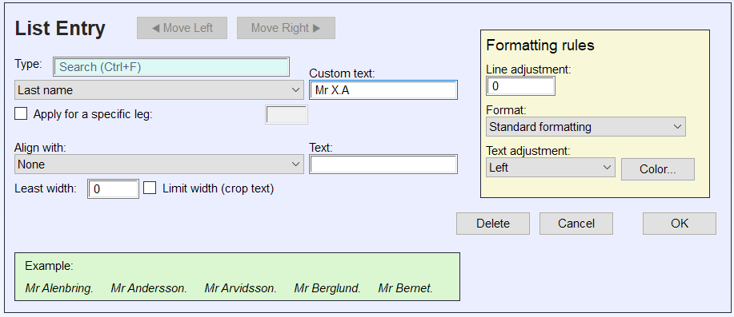
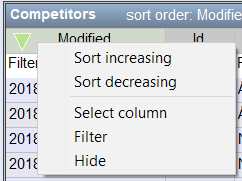

MeOS 4.1
MeOS – a Much Easier Orienteering System
MeOS handles those administrative routines need for small and large orienteering events. The goal is ease of use. Small events and trainings need very few settings and almost no preparation.Larger event are by nature less simple. The goal in this case is rather flexibility; performing the—sometimes complicated—tasks needed for a large event should be smooth.
MeOS is built with open source. This means that the program is free to download, install and use, and that anyone who knowledgeable in the art of programming can modify it do suite special needs. Although MeOS is free, it costs money to develop and maintain. If you find MeOS useful and want to support the development, you are welcome to contribute. See MeOS website, www.melin.nu/meos.
The documentation is organized to that the basics are presented first. The first section, Small Events and Trainings, contains everything needed to carry through a simple event or training.
Following that is a section named Managing MeOS that describes more advanced settings and functionality. Then follows a section about larger events Large Events, including instructions how to connect several MeOS computers in a network. The section also treats backups, economy invoices and administration of clubs.
Then follows distinct sections on Large Events and Competitions with Several Stages, including competitions with patrols. MeOS supports Announcer's Module and also combination of Rogaining and ordinary orienteering in the same class.
The Appendix I: Eventor Connection is a direct connection to an entry system used in some countries. The Appendix II: Table Mode, is often practical when you want to change several this at once, for example set status "did not start" from an alphabetically ordered list.
MeOS hides pages and functionality that are not available. For example, the page teams will not be visible unless there are classes including teams. Some features that are only needed occasionally, such as functionality for several stages, patrols, and Rogaining must be activated manually (see MeOS Features) or when you create a new competition.
Contents
- General Advice and MeOS Philosophy
- Small Events and Trainings
- Timekeeping Without Courses and Controls
- Competition Features
- Managing MeOS
- MeOS Features
- Optional Extra Data Fields
- Save, Move and Remove Competitions
- Runner Database
- Ranking
- Bibs
- More About Lists
- Automatic Printing and File Export
- Publishing Live Results on the Internet
- Remote Input and Radio Times from the Internet
- MeOS Information Server
- Direct Entry via WiFi
- Local Settings
- Testing MeOS
- Large Events
- Using MeOS in a Network
- More About Classes
- Advanced Start List Drawing
- Seeded Drawing
- Starting Groups
- Clubs
- Economy and Invoicing
- Competition Settings
- Counting Returned Hired Cards
- Predefined Rental Cards
- Merge Competitions and Distributed Event Centers
- Managing multiple competitions in one MeOS competition
- Automatic Backup and Restoration
- Competitions with Several Stages
- Announcer's Module
- Teams, Relays, and Classes with Several Races
- Rogaining
- Qualifications and Final – Knockout Sprint
- Editing Lists
- Result Modules
- Appendix I: Eventor Connection
- Appendix II: Table Mode
- Appendix III: Championships with Qualifiction and Final
- Appendix IV: MeOS for Mac and Linux
General Advice and MeOS Philosophy
Here are some general tips for smooth operation of MeOS.- MeOS is organized by a number of forms that are either a property form for some object (properties such as the name, class, start time etc for a participant), or is a functional form that holds settings to perform a particular action (assign bib numbers, export a file, or draw the start list).
- When you make changes to property forms, the changes are automatically saved if you go to another page or select another participant. You do not need to press the save button, which is useful if you want to make many changes in a row. The Undo button restores data to the last saved value.
- Functional forms work similarly, but have one ore more action buttons (such as Distribute Times or Export). You press the button to perform the action. In general, you can instead press ENTER on the keyboard. In some other programs, dialog boxes are used instead.
- To switch focus between form fields, you can use TAB on the keyboard.
- When using the club and running database, fields where you enter name and club have an autocompletion feature. You get suggestions in a list on the screen that matches what you wrote. Use ARROW UP and ARROW DOWN to select the correct proposal, then press ENTER to use the selection. To get rid of the suggestions, press ESC.
- Changes have direct effect in MeOS. If you change a punch code for a control, all participants might instantly get Missing Punch status (MP) without any warning. But you can as quickly change the code back. In many cases, if an action can not be easily undone, MeOS will provide a warning before the action is taken.
- A basic philosophy in MeOS is that actions can be performed in any order (unless there is an obvious dependency – drawing start lists must be done before starting). As an example, you can begin by reading out cards, then add runners, then define courses and classes, then put together the runners in teams, and finally print the relay results. This particular example is not very useful, but it means that you are not guided by certain working methods or procedures. And you can usually change things later without having to start over.
- If you need to make many changes of similar kind,
the table mode can be powerful. You can filter and sort columns, and cut
and paste data from a spreadsheet program, such as Excel. A task that
can be solved in this way is moving all start times in a certain class
10 minutes ahead.
- Sort the table by class.
- Select the start times of the class.
- Copy, paste into Excel and update the times.
- Copy the modified times from Excel.
- Paste the new start times into MeOS. It is sufficient to select the first cell for the class in the column of start times. MeOS will fill the column downwards.
Small Events and Trainings
The definition of a small event is that only one computer is needed. As a rule of thumb, an event with about 100 competitors works well with one computer. But more important than total number of competitors is number of finishing competitor per minute and how many entry changes and direct entries you need to handle during the event.There are two fundamentally different ways of using MeOS for small event. The traditional way is to register competitors, classes and courses in advance. This gives the possibility to draw start lists, check which runners remain in forest, etc.
The alternative is to let MeOS build the competition automatically as the comeptitors finish; punching cards are tied to runner&[Unknown function 039;s]via the competitor database. The courses are constructed from the punches present in the cards read out, and class is decided also from the contents of the card. This mode of operation is particullary suitable for trainings.
MeOS is equipped with a roubust system for automatically backup the competion. You can read more about this here: Automatic Backup and Restoration.
Creating a New Competition
To create a new competition, click New Competition on the start page. You may also fetch the competition from Eventor.Enter the competition&[Unknown function 039;s]name, date and first allowed start time. Then you have to choose if you want to import entires now or later. If you choose Import Entires you open a new form where you can select import files.
In the next step, or if you chose not to import entries, you have to decide which MeOS features you want to make available. You can simplify the user interface by disabling features not used. You may enable any feature at any time by clicking MeOS Features on the page Competition.
- Individual competition all functionality needed for an individual competition.
- Forked Individual as above, but with support for courses with forks.
- Competition with Teams Team competitions, for example relays.
- Basic Features include only basic functionality
- All Features Activate everything and hide nothing
- Details Selection Select exactly what features you need from a detailed list. See meOS Features.
Preparations
If you prefer to prepare the competition, to register entries in advance, to setup classes, courses and so on, this section contains basic instructions.On the page Lists there is the button Run Competition Check. Pressing this button opens a report with potential problems in the competition and shows the assigned course of each competitor. Problems detected include competitors without start time, card or a card not holding enough punches for the course, and problems such as two competitors starting at the same time with the same course.
Register Entries
On Names
MeOS has one single field for the competitor&[Unknown function 039;s]name. Depending on the character of the competition, you may enter a complete name, just the given name or even a nickname. You may enter complete names on the form"Given Family [Family 2]" (Alice Smith Norman),
or separated by comma"Family [Family 2], Given [Given 2]", (Smith Norman, Alice Joanna).
The latter way is needed in cases where more than one given name is used. Note that the formatting of lists can be affected by very long names; if this becomes a problem you will have to make names shorter by using initials or other adjustments.In the built-in lists, MeOS shows all names on the form "Given Family" regardless of how you input the names. You can manually format lists in other ways, see Editing Lists. If you prefer to always see and work with names on that format, you can set the user preference NameMode to 1, see Local Settings.
Structured Import
Importing entry data is the preferable method to register entries. The recommended format is IOF-XML version 3.0. But also legacy formats such as OE2003 CSV or IOF-XML version 2.0.3 can be imported. Any class or club present is automatically added, and MeOS uses the club database to fill in club details. Select Entries under Import Data on the page Competition.Free import
If you don&[Unknown function 039;t]have access to entry data in a standardized format, MeOS supports free formatting. Select Free Entry Import on the page Competition. You can now fill in name, club, class, card number and optionally start time, in any order you like. If possible, separate fields with a comma or semicolon. Also, try to add several entries at the same time formatted in the same way. An example of data than can be imported is:John Plumber, Bushmen OC, Men Short, 800605
George Wood, IF Thor, Men Long, 390101
Steve Clark, Forest Vagabonds, Men Long, 37371
IF Thor
Johan Svensson, Long, 800605
Sven Johansson, Short, 37371
Johanna Andersson, Long, 390101
- Use one of the formats described above.
- List at least 5 entries, each row formatted in the same way.
- Add classes manually in advance, this might in particular help if the class names are not standard Swedish or English class names. Also installing a club database with localized club names will help.
- It is possible to use free import to import patrol- and relays classes. In this case, however, it is necessary to add the classes in advance, so that MeOS knows how many team members to expect in each team.
If the club database and/or runner database are installed, MeOS will automatically match runners and clubs against it. MeOS will use the database to automatically fill in details about the competitors and clubs.
Manuel Registration
On the page Competitors you can register new competitors. Click New Competitor, and fill in relevant data. This method is not so practical when there are many people to register. It also assumes that the classes exist, since the page is only available if there are classes.Entry Data from Excel and Other Spreadsheet Programs
If you have entry data in a table in some spreadsheet program, you can use Table Mode on the page Competitors to paste entries. Also in this case you must create classes in advance.Eventor
If your country has a central entry system compatible with Eventor, you can use MeOS direct link Appendix I: Eventor Connection, to quickly fetch and configure a competition.Quick Entry
Quick entry is a simplified entry form. First, you must create the classes and make sure to check Allow quick entry. Access the quick entry form on the page SportIdent. Select Quick entry mode from the list of functions. If you connect a SI-unit, it is possible to read out a card number, and if the competitions database is updated, runners will be identified automatically.It is possible to print out start certificates for each new entry. Check Start Certificate and make appropriate Printer Settings. You can specify extra lines of text that will print on each start certificate. (You can also print the certificate on the page Competitors).
If you have a local network with Wi-Fi it is possible to let competitors sign up themselves, using their smartphone. See direct Entry via WiFi.
You can configure what extra data fields you want to show in the dialog (like date of birth and phone), see optional Extra Data Fields.
Runner Database
You can use Runner Database to register entries. Select Runner Database on the page Competition and then Persons. The table shows all runners in the database. Double click + in the column Enter and choose a suitable class. Click Enter.Start Lists
You can import a start list, including times, in the format IOF-XML 3.0.Adding Classes
Go to the page classes. For a simple event, Show advanced settings need not be checked; you then get a simplified view with out (cluttering) settings only needed for larger events.The button Several Courses / Relay is described in detail in the section Teams, Relays, and Classes with Several Races. For a simple event the most interesting (in the form for several courses) is the possibility to set up a course pool. It means that the course (forking within class) and competitor are tied when the runner finishes. It makes it possible to use forking without deciding in advance who runs what course – for example a common start and unmarked maps.
Another possibility (with several courses) is to setup a simple two stage class, with prologue and pursuit.
- If you check Allow quick entry it is possible to you a simplified form to register competitors on the page SportIdent.
- No timing means that the results only include status, not place and time.
Defining Courses
Register courses on the page Courses. A course is defined by a name and a comma separated list of controls (control numbers). Normally, the control number is the same as the punching code, however, it is possible to change to punching code of a control later (for example in case of erroneous control programming), see Controls.You can provide the course Length, Climb and the Number of maps. The latter information is used in the quick entry form to show how many maps are available. But all these fields are optional.
Use first control as start means that the first control punch on the course defines the start time. This makes it possible to use an ordinary control as a start unit.
Use last control as finish means that the last control punch defines the finish time. A punch in a finish unit is ignored. This option can be used to excuse some classes from a tough finish.
You can also control settings for Rogaining on this page.
Importing courses
You can import courses from a course setting program like OCAD or Condes. MeOS will also try to tie courses and classes automatically and setup relay forkings (but please verify the result!). If the course file does not contain class information, you may instead check Create a class for each course to created classes anyway.If the file you import contains distances between controls, MeOS will store this information and use it to calculate running speed between controls. You can edit these distances manually by clicking Edit Leg Lengths.
MeOS can also import courses from a simple course format: One course per row, separate controls using a comma. You may (but it is not required) that a row starts with the course name.
Short course, 34, 56, 77, 63, 100
Long course, 34, 37, 56, 57, 71, 77, 63, 100
Loops With a Common Control
Suppose that you have a course with five loops that a competitor may to run in any order. This gives you 120 possible courses, which is somewhat tedious to setup manually.MeOS solution in this case is a possibility to enter an example of the course, and supply the common control. When a competitor finishes, MeOS wil automatically create a course that matches the actual order of the loops for the runner. MeOS will also sort split times, so that competitors can compare times as if everyone ran the loops in the same order.
Create the course and enter an example of how the (total) course can look like, for example the loops in order ABCDE. You must include the common control between the loops. Check course with loops and specify the common control.
You can also use this functionality for butterfly style forking.
Exporting Splits
When exporting split times, you can decide if you want MeOS to sort the loops, so that everyone seems to have run in the same order. This works well if you want to compare times, less well if you want to match with GPS tracks.Shortenings
It is possible to combine loops with shorter course variants. Activate with shortening and select the option fewer loops as shortened course.This functionality is primarily intended for trainings, since MeOS cannot check that the loops are taken in any predeclared order. It may be possible to cheat by following someone else.
Drawing the Start List
On the page Classes you find the functions Draw / Manage Start Times and Draw Several Classes. In the list of classes, the symbol [S] indicates that all runners in the class has a start time. If all runners have a common start time, that time shows instead.If you provide start punch units, it is the actual start time that is used. Do not provide start punch units if you always want to use the drawn start time. Or use the class setting Ignore start punch.
Drawing Start Times for a Class
The function Draw / Manage Start Times operates only on the selected class. You have to choose a method.- Draw random (MeOS) is MeOS default drawing method. It tries to separate competitors from the same club, but also ensure that each competitor has a chance to get every possible start position.
- Draw random means a totally random order.
- Swedish method means that times are distributed to ensure that runners from the same club does not start too close. The method uses an algorithm invented long before the computer era, which in the original form involves writing the competitors names on small pieces of paper, shuffling, sorting, and drawing.
- Seeded drawing can be based on ranking or a previous result, see Seeded Drawing.
- Grouped start means that the runners start in small groups of varying size, simulating the situation in the middle of a relay.
- Simultaneous Start means that all competitors start at the same time. Also late entries will automatically get the fixed starting time.
The field Start interval is the time between start for normal drawing. If you use groups start, all runners will start during this interval. If you provide a Number of vacancies, MeOS will add that many vacant positions. You can select if you want the vacant positions first, last, or drawn into the starting list. The field Leg is used to draw times of a certain leg in a relay. If you check Assign bibs and provide a bib number, MeOS will assign bibs starting with this number.
Under Start pairwise you can make the start individual (the default), or let competitor&[Unknown function 039;s]start two by two (in pairs), or in larger groups. Typically you would combine this option with some forking or a course pool.
The command Draw Class will assign start times to the entire class. The commands Draw Remaining Before and Draw Remaining After assign start times only to runners without a start time. The competitors are assigned times before or after (respectively) the already assigned times in the class.
The command Erase Start Times clears all start times in the class.
Drawing Several Classes
The command Draw Several Classes takes you to a form with basic settings. You can fill in First start and Least start interval, which is the least start interval within a given class. Vacancy fraction is given in percent. Method sets the rule for drawing.The command Draw Automatically draw all that remains to be draw without any further interaction from your part. If the courses are setup, MeOS will ensure that runners whose courses have similar opening do not start at the same time. If some runners already have start time, the check box Late entries in front decide if remaining runners get start times before or after the already drawn.
Simultaneous start lets you define a fixed start time for one or more classes.
See Advanced Start List Drawing for details on the manual draw method.
Draw Classes with a Specific Course Together
When many classes share the same course, you sometimes want to draw start times for all classes with a specific course in one block. The start interval for the course becomes even, but within a class the intervals may become irregular.To achieve this, select a curse on the page Courses and then Draw Start Times. You can specify First start, Method, and Interval. The number of vacancies refers to the number of vacancies in each class.
You can also achieve this by the option Draw classes with the same course together under Draw Manually when you draw start times for several classes at the same time.
Borrowing and Reusing Punching Cards
You can assign (lend) cards on the page SportIdent. Choose Assign cards. All competitors in need of a card will show up in a list, with a field where you can fill in the card number. If you have access to a SI unit, you can use it to assign cards. You can also interactively assign cards to competitors, see Assigning Cards to Competitors.- On the page Competitors the check box Borrowed marks lent cards.
- When a borrowed card is read out, a reminder to return the card shows up.
MeOS allows several runners to use the same card. When the first runner has finished, the card can be assigned to a new person. It is not recommended to assign the same card to several runners in advance, unless the competitors are within a team with a predefined order. Otherwise it is not possible to determine who finishes first.
Carrying Out the Competition
This section explains the fundamentals needed during the competition. If you use MeOS without preparations some functionality will not be available. This includes the start list and the report of runners remaining in forest.Reading Out Cards
On the page SportIdent you can read out the SI-card when the runner has finished. Choose the function Readout/radio. To avoid the function from being changed accidentally, you can use Lock Function. Then you need to Unlock it to change it.Before using the SI-unit, make sure it is installed and properly programmed; in particular certain device drivers need to be installed if the device connects via USB. On the SportIdent website, www.sportident.com you can find device drivers and instructions.
We recommend that you use the extended protocol, which also set by SportIdent Config+. It gives improved stability and much better performance, that is, faster readout, in some situations.
The option Interactive readout means that MeOS ask you to fill out any missing data directly at readout. If you haven&[Unknown function 039;t]registered runners in advance, this is the function that lets you build the competition as runners finish.
In a large event, you typically handle runners with missing punches, wrong card etc. in a special department. Then you should make sure that interactive readout is not active.
Readout Window
The Open Readout Window button opens a new window where information (name, class, results, etc.) is displayed in large letters for the most recently read out card. If you have an additional screen at the readout that you face the participant, you can maximize this window on that screen. Of course, it is also possible to maximize the window on a single screen as well, which works well if you have a red exit and do not handle participants with issues.Sound Feedback
MeOS can play different sound signals depending on the status of the readout (OK/Not OK/Action required/New class leader). Select Sound to activate this functionality. You can control which sounds to play and also select custom sound files by clicking Sound Selection.Read Out in the Background
MeOS can read out cards in the background, while you do something else in the program. In particular it is not necessary that the page SportIdent is active. For example, you can show the result list, which is automatically updated as runners finish.If you do not use interactive readout, unknown cards are registered as unpaired, see Unpaired Cards.
Manual Timing
If you check Manual input on the page SportIdent, MeOS shows a box where you enter Bib, card, or name.If you type the first few letters of the name and hold a moment, MeOS will make a search, and shows the result beneath. If it is the right match, you do not need to type more of the name.
Approving and Disqualifying Competitors
Handle manual corrections of punches and result on the page Competitors. If you want to approve a runner missing punches, you need to add the missing punches manually, see Editing Punches.When you select a competitor, the readout punches shows together with the expected course. Extra punches, that is, punches that could not be matched against the course, are shown at the bottom. A missing punch is shown as a gap.
The competitors running time is controlled by the fields Start time and Finish time. If you manually want to set the running time, you have to adjust these fields accordingly. The start and finish time are controlled by the start punch and finish punch.
If there is a card with a finish punch, it is not possible to directly assign another finish time. Instead, you have to edit the finish punch. The same rule applies to the start punch. The start time can also be determined by the class or by the time for changeover, in case of a relay.
The status No timing means that MeOS will not show or export the time or place of the competitor, just a note that the race was completed. The status Out-of-Competition (OOC) means that the time is shown, but the result is not included when the placements are computed, and is shown after the competing runners in the result list.
In addition, there is a status Not Taking Part (NTP). This means that the runner is filtered away from practically all lists. In a competition with several stages, you can use this status for a runner not taking part in a particular stage.
If there is a card, it controls the status to some extent.
- If there is a card, matching the course with a finish punch, it is not possible to set status unknown, DNS, MP or DNF. But it is possible to disqualify the runner.
- If the card does not match the course, it is not possible to set status OK; you have to add the missing punches to the card. The status is DNF if there is no finish punch.
- If there is a finishing time, it is not possible to set the status DNF.
You can use comments to document why a participant has been manually approved or disqualified.
Editing Punches
It is possible to edit a card on the page Competitors. To change a punch, mark it in the list Punches. Modify the time using the field Time, and then Save. The command Remove Punch removes the selected punch. Also the start and finish punches can be edited.To add a missing punch, mark the missing punch in the course definition to the right. Click Add Punch. The you can edit the time, see above.
There is also command called Add All, which adds all missing punches. This button is practical when you want to approve the competitor.
MeOS keeps track of whether the card has been changed manually, for example if control punches were added or times changed. Status information about it is displayed on the page Competitors, and also – if there are manually changed cards – a list of competitors with modified card data is shown under Reports on the page Lists. This feature makes it more difficult to manipulate results, but does not make it impossible for someone with access to the database itself.
Printing Split Times
The check box Print splits automatically on the page SportIdent means that MeOS will print a page with split times as soon as you read out a card. You can print to any printer, including a special receipt printer. MeOS will adapt the format of the print to the shape of the paper. Use the button Print Splits to configure the printing and to choose and setup the printer.- Split time list allows you to choose your own custom split time list. The Automatic choice makes MeOS select a custom list of different type depending on the class. The Standard choice uses a built-in list with no class results. Other lists are either built-in or user-defined. For such a list, you can select Edit to open the list (or a copy of a built-in list) in the List Editor.
- Printer lets you choose and setup the printer.
- Custom text lines lets you define custom lines that are printed below the splits. You can also insert dynamic / computed values, by adding a symbol within a bracket, for example: Please pay: [RunnerFee] (Which could result in the output Please pay: 5€. Available symbols are shown in the list to the right.
- It is possible to use different lists in different classes. Then you go to the table for classes, choose to display the column Split time list, and make the setting per class.
If you use a receipt printer, take care to setup the correct paper format, for example 72mm x Receipt. Sometimes you have to look deep into advanced printer settings to find this setting; this varies with printer model and operating system. If you happens to print with A4 setting, the typical symptom is miniature text, like a shrunk A4.
The page will be scaled so that the text fits. If the competition name is very long the text might become too small. Consider to make the text shorter or use a custom list to re-format or line break as needed.
Using a Standard Printer
If you prefer to print split times on A4 or a similar standard format, optionally with several runners on each page to save paper, mark Times in columns (for standard paper). You can also specify to collect several cards on the same sheet (Maximum number of cards per page) and give the maximal waiting time (Longest time in seconds to wait for the printout). If this time is reached, the print is made even though the number of read out cards waiting for a printout has not yet reached the specified number.Start and Result Lists
On the page Lists you will find (among other things) start and result lists. All lists have the functions Print, PDF, and Web Document, which prints the list or saves it as a PDF or HTML file. Read more about Export to HTML.- Copy copies the entire list to the clipboard. You can paste it into a word processor or spreadsheet program.
- New Window opens the list in its own window, which, for example, you can move to a second screen.
- Automatize creates a service that prints or exports the list to a file at regular intervals, see Automatic Printing and File Export.
- Class Selection open a control window where you can change the class selection for the list, and also a few other related settings: page break between classes, age filtering, and page heading.
- Appearance opens a separate window with several settings. You can change background and text color. You can also view the list in full screen, see lists in Full Screen.
- Remember the List saves current list settings, for example the class selection. You can then quickly access the list again from the page Lists. The saved list is stored with the competition, and accessible for anyone opening the competition. You can append the list to an existing list to show them together.
- Return takes you back the page with list selections.
- All lists in MeOS are updated in real time – when competition data is modified, the list is updated.
- In most lists, you can click the competitor or team to open the runner or team, respectively.
- A remembered list can be accessed via the REST-API using MeOS as a web server. See MeOS Information Server.
Split Times and WinSplits
On the page Competition, Export Result and Splits, you can export a file with splits suitable for upload to WinSplits Online or as results Eventor (Sweden). The file is exported to IOF-XML format version 2.0.3 or 3.0. If the competition contains several legs, you can choose to export an individual leg or the entire competition.IOF XML format, version 2.0.3 does not support patrols. MeOS will create a file specially suited to WinSplits by abusing the standard slightly; the name of the second patrol member is written in the field for club name.
You can use WinSplits Pro to visualize results from MeOS during the competition.
Competitors Remaining in Forest
To use this functionality, you the feature Track runners in forest needs to be activated under MeOS Features on the page Competition. It is activated by default.
Show Runners in Forest
On the page Lists there is a list called Competitors in Forest. It shows all competitors that have not yet finished, sorted by class and start time. If no start time is available, a check time is shown instead or entry time (if it is from the same day as the competition). This list is updated automatically when any change occurs.It is possible to filter the list to show only competitors that have been out longer that a certain time. The list also includes punches from unknown cards; if the competitors database is used possible card owner from the database is shown here as well.
The list Controls, also found under Reports, shows the number of visitors per control and how many participants have the control left on the course. When a participant has passed a radio on the course, MeOS assumes that the controls earlier on the course have already been passed (depending on how the courses are laid out, this assumption is more or less reasonable).
If you set the courses so that one (or more) radio controls are passed about halfway by a large proportion of the participants, it can enable early fetching of controls from the initial parts of the courses.
This information is also available in the table on the page Controls.
Edit and Manage Competitors in Forest
Runners in Forest are managed on the page Competitors. Select Competitors in Forest.You will see a list with Runners Without Registration. These runners (or rather their SI-card) have not been encountered at all during the competition. The command Set Status <DNS> for Runners without Registration changes the status for these runners to Did Not Start (DNS).
If all runners has checked their cards or used a start punch, you can readout these units (you can also readout controls and clear units). Then all runners who have punched anywhere will disappear from this list, and are instead moved to the list Runners, Status Unknown, with Registration. These runners remain, with some certainty, in forest.
To read out the punches from a SI unit, use the program SportIdent Config+, provided by SportIdent. Choose to save the readout as a semicolon separated file (csv) and import this file to MeOS by the command Import Punches.
If you accidentally clicked the button Set Status <DNS> for Runners without Registration before all check units (or similar) were read out, too many runners will get status DNS. When you have read out the remaining check units, these runners will show up in the list Runners, Status DNS, with Registration. The button Reset Status <DNS> to <Unknown> for Runners with Registration will reset the statuses for these runners.
Multiple Races per Competitor
In some contexts, a participant may run any number of races or laps, perhaps the same course several times or different courses, using the same card. Then use the function Multiple races per competitor on the page SportIdent.When a card that has been used before is read out, an automatic re-registration of the same participant takes place, the name followed by a number. The class is automatically selected based on the contents of the card. (For the first race, the class is decided upon registration).
If you make a new regular registration with the card, it will from then on be taken over by this new registration, and that participant has the opportunity to run any number of laps in the same way.
In the results list, the races are presented as independent individual races. If aggregate results are desired, use instead Teams, Relays, and Classes with Several Races.
Individual Result Report and Result Kiosks
In addition to normal result list, MeOS can provide an individual result report optimized for viewing on screen. Go to the page Competitors and click Report Mode.Select the runner from a drop down list. If you check Show last read out competitor, MeOS will automatically switch to the runner who reads out his/her card on that computer. You can show this view while reading out cards for a direct report.
When you have selected a competitor you will see a graphical view with all controls, splits, statistics and estimated lost time.
The button Result Kiosk puts MeOS in a mode where only the result report is reachable. You cannot make any changes to the competition and you cannot exit this mode without restarting MeOS. If you have connected a SI unit, it is used only to select the runner being displayed. If you give competitors access to a result kiosk, you should consider protecting the competition database with a password.
If a competitor is part of a team, you will see the entire team. Also reported radio times are included, so this view can be used to let runners follow the team&[Unknown function 039;s]progress prior to the changeover. For example, you may supply on-line check units at the entrance to the changeover area. When checking, the competitor can see the current status for the team and the runner in forest.
Printing Split Times without a Competition
You can use MeOS to print out split times without any competition.- Start MeOS
- Go to the page SportIdent and activate a readout unit.
- Click Print Splits to setup the printer.
- When reading out a card, its data is shown directly on screen and is optionally sent to the printer. The runner database can be used to lookup names from card numbers. You can also edit the name by clicking the current name or the text Unknown.
- You can Save the cards in a semicolon separated file, or select Create Competition to construct a competition based on the cards.
Importing Results
You can import a complete competition, including results, to MeOS by exporting it to the file format IOF-XML 3.0 from the system used for the competition.A possible usage is to process results generated from GPS tracks, for example by exporting from LiveLox. Results created by this method obviously approximate, but may suffice for a training event. After the import you can edit the result to create a result list, or use the results to create a start list for a pursuit.
Another possible usage to setup total results when some stages ran with some other software.
Timekeeping Without Courses and Controls
MeOS is well suited for timekeeping in general, even without an orienteering course with controls. It is also possible to use technical systems for timekeeping, for example SportIdent, for electronic timekeeping and splits or laps.- Create a new competition.
- When selecting functions in MeOS, select Only timekeeping (no Courses). This corresponds to the function Timekeeping / Without courses in the list of functions in MeOS. The main effect of this setting is that the tab Courses and other settings for courses are hidden.
- You can still add controls. The point of having controls (with names) for certain punch codes, is that these can be displayed in result lists (for splits).
- You can use the function Manual Input on the page SportIdent, or electronic timekeeping.
- If you are using electronic timekeeping, you can activate Result on Finish Punch on the page Classes.
Lap Count
MeOS can count the number of finished laps. After each lap the participant punches a lap control and at finish a finish control. You can use this for a competition type where you have to make as many laps as possible in a set time. Use any of the lists Count Laps and Count Laps with Extra Time on the page Lists. The latter variant presupposes that there is a control for split time out on the course that the participant should punch (over and above the lap control) to register a lap.Lap Count – Step by Step
- Create a new competition
- Select Only Timekeeping (no Courses)
- Go to the page Controls and define a lap control, giving it a suitable name, for example Lap Time
- Program this control and a finish control (and clear, check, start as needed)
- Have participants punch the lap control after each lap. Note that there must go at least one minute between punches for it to count as a lap. This is so that an extra security stamp on the same lap is not counted as a new one. This rule can be modified to a longer or shorter time by changing the result module for lap results, see Result Modules.
- Of course, it may still be appropriate to place an official at the lap control who ensures that everyone punches and that no one turns back and punch again.
- After finish and readout, use the Lap count list under result lists to produce a result based on number of laps.
Competition Features
This section documents features of MeOS that can be used to design and customize the competition for different needs.Request Start Time
If you want to let the participants choose the start time, for example to make it easier for families with children, but still want to have control that not too many start at the same time and that no two in the same class or on the same course start too close together, the Request Start Time function is available on the page SportIdent.- Choose which classes can book a start time. Preselected are the classes where book start time is selected on the page Classes (Show advanced settings).
- Enter the basic settings: first start time, last start time and start interval. The minimum time to start field is the time from now to the first admissible start time. It should correspond to the time needed for the participants to get from the time request station to the starting point in good order.
- Choose start time means that MeOS presents a list of possible start times to the participant. The participant chooses the desired start time (if it has been taken since the list was presented, another time is allocated nearby). The alternative is that MeOS assigns the first possible start time (taking into account the minimum time to start). This option can be good if the start booking is adjacent to the start location. If you let the participant choose between proposals, you specify how close the proposals should be (distance between suggestions). In order not to overwhelm the participant with options, MeOS will thin out the suggested times slightly the further into the future they are.
- Choose which rules should apply when starting allocation, e.g. if participants in different classes with the same course are allowed to start at the same time. See the draw start list documentation for more detailed explanations of the choices. The stricter the rules you set, the more difficult it can be to find a suitable start time, depending on whether large classes share the track and so on. See simulation below.
- To control the maximum number of people who can start at the same time (per starting place), enter the max number of parallel start. The limit includes participants with a preallocated start time, but (of course) not those with a free start time.
MeOS now displays a page prompting the participant to stamp to select or assign a start time (if you have not enabled an SI unit, you will be prompted to do so). There is also a manual mode where you can select a participant and enter a desired start time. MeOS will allocate a free time close to this.
Select start certificate and printer settings to automatically print a start certificate with the allocated time (good for the participant and can be handed in at the start).
If you are using a online result service, the allocated start time will (typically) appear there.
Kiosk mode
The Activate Kiosk Mode command puts MeOS in a mode where only the start reservation function is available according to the settings you have made. Use this mode to let participants book a start time themselves. Only way to get out of kiosk mode is to close and restart MeOS.If you are using a touch screen, you can have participants book a start time by stamping and then pointing to the desired start time on the screen, which can be easier than clicking with a mouse.
Simulation
To test whether the entered starting depth is sufficient for the number of participants you have in different classes and the settings you have made, you can carry out a simulation. Select Simulation.The simulation works by letting all the participants request a start time at a random time during the start period, and MeOS tries to assign a start time according to specified rules. The result of the simulation shows whether everyone got a start time during the specified period and the average waiting time to start (compared to the desired time) in the different classes.
The simulation is done in a copy of the competition, so your competition is not affected. When the simulation is complete, you can choose to save that copy of the competition to further analyze the simulated start lists and minute start list.
Start Class on Signal
If you want to set the common start time for one or more classes when the start goes (rather than predetermining the start time and waiting for it at the start), you can use the Start on Signal function. On the the page Classes, enable Show advanced settings. Select Start on signal and check that the computer&[Unknown function 039;s]clock is running correctly. Choose which classes you want to start and press Set Time when the start goes. It is also possible to set restart time and rope time (for all legs) through this function.Vacancies, Change Class and Cancelled Entries
When drawing a class, you can add vacancies to the class. To assign a vacant position, the convenient way is to use Vacancies on the page Competition. Type the data for the runner you want to enter. If you leave the fee field blank, the default fee will be assigned (this field is only visible if you have chosen to handle fees manually). If you type a card number and have access to the runner database, MeOS will fetch name and club from the database.You can use a SI unit to get the card number. Start the SI unit as usual on the page SportIdent, and return to the vacancy form.
If have no drawn start list or want to insert new competitors before the first start, there is little point in using vacancies. Use instead Form Mode on the page Competitors and click New Competitor, and enter the required data in each form field.
When using Form Mode, the button Cancel Entry sets the status of the runner to DNS and a new vacant position is inserted at the (now free) start time. If you select Change Class you will instead see a list of available vacant positions in different classes. If you select such a position, the runners moves to that position, and a new vacant position is created in the previous position of the runner.
MeOS will not automatically adjust the fee when changing classes, so if the new class implies another fee, you must change the fee manually for that runner. See economy and Invoicing.
Unpaired Cards
An unpaired card is a card that was read out, but has not yet been tied to a competitor. If you change the card number of a competitor, and there is an unpaired card with that number, it will automatically be tied to that runner.The button Handle Cards on the page Competitors brings you to a table with all read out cards. You can sort this table by clicking a caption, see Appendix II: Table Mode. Use filter to search and filter the table. If you click a card number, you get information on that card and a list with all competitors. By selecting a competitor and selecting Pair the current card is tied to that competitor. If you instead click Unpair, the card is saved as unpaired.
Unpaired cards can be deleted, for example cards read out by mistake or as a test.
Assigning Cards to Competitors
If you with to interactively pair competitors and cards, for example when checking in to the changeover in relay, you use the function Assign rented cards on the page SportIdent. Check the option Interactive readout. Type (or use a bar code reader) to fill in the field bib, race id, or name.- If you enter the initial letters of a name and wait a moment, MeOS will make a search. The result is shown under the field. The MeOS found the right match, you do not have to type any more, otherwise you enter more letters.
- Race Id is a unique identifier that is assigned to each race. You can access all race id number in the table on page competitors, which can be used to print a corresponding bar code on bibs. It is also possible to define custom race id number and paste into the table. The race id is kept when filling in vacancies or changing team members.
Check Hired if the assigned card should be marked as a hired card.
If you have provided a list of rental cards, se predefined Rental Cards, you also have the option Automatic handling of hired cards using pre-registered card numbers. The rental status will then be set automatically.
Controls
In most cases, MeOS handles controls automatically for you, but you can make certain manual settings. On the page Controls you can see all used controls. Every control has a unique id number. Normally, this number is the same as the punching code, but the punching code can be changed if needed.Refer to the id number when defining a course.
- OK means that the control is operating normally; a competitor has passed the control if one of the specified punch codes has been registered. Several punch codes can be specified to accomplish simple forking or to replace a non-functional control.
- Multiple means that the competitor need to register all specified punch codes to pass the control. This functionality can be used to create a nest of controls that can be taken in any order.
- Bad means that the control is not used at all; the result is that same is if the control was removed from all courses.
- Missing means that the control is not used at all, and the following control on each course will be without timing. The competitor will get the same time on the next control as on the previous control, so it will not matter how much time was spent looking for the missing control.
- Rogaining is described in the section Rogaining.
- No timing means that MeOS ignores the time on the leg to the control (from the previous control) when times are calculated. The effect is that the punching time on the control is the same as the punching time on the previous control, and that the total running time is independent of the actual time on the leg to this control.
- Optional means that punching the control is not obligatory to get a final result, but the time will be included in the split time analysis if the control was punched.
Minimum leg time means that no runner can get a time on the leg that is faster than the specified time. If the runner is faster, the all following times are adjusted. This can be use to cross a road with traffic without time pressure. Note that the time adjustment cannot be done until after the runner has finished, so radio times can be somewhat wrong when this functionality is in use.
Note that any change you make will have global effect immediately. All results are recalculated and all lists are updated.
Table Mode and Statistics
During and after the competition, you will find some usage statistics for each control. How many visitors it has and how much time competitors has spent searching for it (lost time).If you select Table Mode, you will see this statistics (among other things) in table format.
This statistics (exported to an Excel sheet, for example) can provide useful feedback for the course setter.
Shortened Courses
Shortenings are used to let some competitors run a shorter course variant within a class. A common use is to let runners in a restart take a shorter course. Those running the shorter course will automatically be placed behind everyone taking the longer variant. MeOS automatically determine which course variant was run when reading out the punching card.Using Shortened Courses
- Add the standard (long) course and the shortened variant as normal courses on the page Courses.
- Select the standard course and check With shortening.
- Select the Shortened course. If you have a course with loops, it is also possible to let MeOS automatically create shorter versions of the course by excluding loops.
Timing with Tenths of a Second
MeOS has support for measuring time with tenths of seconds as the smallest time unit. To use that feature, you need to make the following two changes:- Check Enable support for subsecond timing on the page Competition. MeOS will then store tenths of seconds from radio punches etc.
- Program the SI units (start and finish) with Sprint 4ms enabled. Then the time is stored with higher precision in the card. In order to obtain fair timing in more important competitions, it may also be appropriate to use SIAC and a radio-based finish line.
Times with tenths are given in the format (HH:)MM:SS.t (eg 17:23.2, 17 minutes, 23 seconds and two tenths). It is possible to manually enter times with tenths even if the functions above are turned off.
Long Competition Times
MeOS can operate competitions running over several days. To support competition times over 24 hours, you need to activate support for long competition times on the page Competition. You should do this if you expect any competitor to have a running time of 20 hours or more.Use only SICard 6 or later for competitions with long times. If and only if the last finish is within 12 hours from the zero time, it is possible to use older cards.
To clarify, for competitions with long running times, the zero time is always 00:00:00, midnight in the beginning of the competitions first day.
To manually specify a time later than the first day, use the syntax 2D 14:00:00, which is interpreted as 14:00 two days after the zero time (that is 62 hours after the zero time). You may omit 0D for times during the first day, that is, you may write 14:00:00 instead of 0D 14:00:00.
- There is no practical limit for the total competition time. But the time between two consecutive punches may not be longer than 22 hours. You should set the courses so that no competitor run the risk of exceeding this limit. If that happens anyway, MeOS cannot guarantee that the total time becomes correct; it can be one or several days too short, and you have to adjust the times manually.
- Since the punches from the system does not contain the date of each punch, MeOS will make certain guesses on which date a particular punch happened. (hence the 22 hour rule mentioned above). For times coming from radio controls, MeOS will instead use the receiving computer&[Unknown function 039;s]local time setting to determine the date. If there are large delays in the communication, or punches are read in afterwards, MeOS cannot guarantee that the times become correct.
Adjusting the Time of a Finish or Start Unit
It is possible to adjust the times for individual start and finish units, e.g. in case of programming errors.To identify the unit, the unit&[Unknown function 039;s]programmed code is used. Therefore, be sure to program all start and finish units with different codes; otherwise they are indistinguishable.
If you enable support for tenths of seconds when programming the devices, the device&[Unknown function 039;s]code will not be saved to the card. (extended times are saved instead). Therefore, this function cannot be used in that case.
Managing MeOS
This section describes more advanced functions that are usually not needed for simple events.MeOS Features
When you create a new competition you have to choose which of MeOS feature you want to utilize. By clicking MeOS Features on the page Competition you man activate or deactivate functionality at any time.- Some features depend on other features. For example, if you enable handling of economy and fees, you cannot disable the usage of clubs.
- Disabling a feature will never change competition or entered data. For example if you manually enter fees, disable economy and fess, you will not see the fees and cannot print any invoices. However, if you enable economy again, the fees you previously entered will still be there.
Feature Descriptions
- Prepare start lists Draw the start order and related functionality.
- Bibs Support for bibs.
- Clubs Group competitors and teams into clubs. If you use MeOS in a context where club relations are irrelevant, for example in a recreation event for the public, you may prefer to disable club handling.
- Edit clubs Process clubs manually. You can for example merge clubs that have been entered twice with different spellings.
- Track runners in forest Keep track of runners remaining in the forest.
- Several MeOS Clients in a network Use a database to connect several computers
- Use Speaker Module Activate speaker features
- Several stages Use when the competitions has several stages and MeOS should keep track of a total result.
- Economy and fees Assign fees and create invoices.
- Vacancies and entry cancellations Enable functionality to assign vacant position and to turn cancellations into vacant positions. The functionality is primarily useful if you have drawn start lists.
- Manual time penalties and adjustments Change the computed running time without manipulating the finish time.
- Club and runner database Use data from the database to auto complete runner and club data. Deactivate this functionality if the ordinary club relations are not relevant, for example competitions for national or district based teams.
- Forked individual courses Forking can be both fair (loops) or simply unfair (mostly used for trainings).
- Patrols Support for patrols with two or more competitors (and one or more cards).
- Relays Handle classes with several legs, courses with forks, changeover and pursuits.
- Several races for a runner Let the same competitor run several races within a relay
- Rogaining Get points for each control visited.
- Manual point reductions and adjustments Adjustment points for runners and teams.
Optional Extra Data Fields
The forms in MeOS contain a number of fixed data fields. In addition to that, it is possible to add extra data fields depending on the needs of the competition. This is supported for the competitors, teams, and classes pages and for the direct entry form.Examples of fields that can be added are phone number, date of birth and nationality.
There are also completely free data fields, where you define both meaning and value. Text fields can be displayed in lists, data fields can be displayed in lists and used in result calculations.
You choose which extra data fields should be displayed under Competition Settings on the page Competition. Built-in data fields (such as phone numbers) are activated by checking the corresponding checkbox. For the free data fields, you can also enter a description of the data field.
Comments & notes
It is possible to add comments and notes about competitors and teams. Press Comments in the form mode, enter the text and save.Save, Move and Remove Competitions
You can move a competition between different computer systems by saving the competition as a file and import it on the other computer.- Go to the page Competition and click Save as File. The entire competition is saved as a standalone meosxml file.
- Start MeOS where you want to import the competition and select Import Competition. Choose the file you saved in the previous step. The competition is always opened as a new competition; you will not overwrite anything.
If you work with a server and want to continue locally (for example when taking down the competition), you save the competition as a file and import this on your local computer. If you prepare the competition at home, you can save it as a file, import it on a computer connected to the server and select Upload Competition on Server, see Using MeOS in a Network.
It is convenient to give different version of the competition different comments in order to keep the apart. You may for example use the pattern
- My Event BEFORE
- My Event START LISTS
- My Event RESULTS
- My Event TEST
Each MeOS competition has a unique internal id that MeOS uses to keep track of different versions of the same competition. When you export and import a competition, this id is usually preserved. The id is used (for example) to identify the competition on a server or to link stages together. If you import a competition when there already is a competition with the same id, MeOS will ask if you want to import the competition as a version of the existing competition or as a new independent competition. If you plan to use the competition as a template for a new competition, the recommendation is to import it as a new independent competition.
Runner Database
The runner database consists of a list with runners and a list with clubs. You typically use some external source for the data. If your country has Eventor, you can get the database automatically, see Appendix I: Eventor Connection.To use the database, club and runner database must be activated, see MeOS Features.
- The tables Persons and Clubs shows the corresponding tables. If there are many thousand persons in the database, it may take a few seconds to show the table for the first time. You can click + on a person to enter that person into the current competition. For a person already in the competition, you see the class instead of a +.
- Import lets you import new data from a file. You can provide a file with clubs and a file with runners. Optionally, you can choose to Clear databases, which means that the current databases are emptied before the import.
To install a database, it must be in the IOF-XML format (version 2.0.4 or 3.0). The installed database is automatically updated from the competitions you organize; MeOS learns who runs with which card, to automatically make a guess next time. - Update uses the Eventor connection, to automatically update the database. A connection to the Internet is required.
- Export lets you export the current database and all MeOS settings to a specified folder, for example on a USB stick.
To import these settings on another computer, close all competitions in MeOS, select Settings, browse and select the same folder again and the click Import. - Export clubs and Export persons lets you export the club and persons databases, respectively, to a file in IOX-XML 3.0 format.
- Clear Database clears both persons and clubs.
- Return takes you back to the page Competition
If you are using a network connection, all computers connected to the network will automatically use the same database, which is the one on the computer that uploaded the competition to the server (each server competition has its own database). It is possible to update the server database by importing the database when you have opened the competition on the server, but the other computers need to close and open the competition again to see the updated database. See also Using MeOS in a Network.
Ranking
Rankings can be used to split classes, for seeded draws, and for class allocation in qualifier-final schemes. It is also possible to include ranking numbers in the start list. MeOS supports two types of ranking systemsOrderings
Ranking assigns each runner an ordinal number, where the highest ranked has number 1, then number 2, and so on. Specify order-based ranking by setting rank to a positive integer. MeOS can read order-based ranking data from a CSV file with the following columns:Id; First name; Last name; Nationality; Ordinal; Score
With a spreadsheet program, you can create such a file from any ranking system. MeOS can also read the old IOF-XML (v2) format with RankList.Score based
MeOS also supports score-based ranking. Ranking points are given as a decimal number like 3.23. Even if the ranking score is an integer, it should be entered with a decimal point, so as not to be confused with order-based tanking; hence 1323.0 rather than 1323.For score-based ranking, MeOS interprets a higher score as better.
MeOS can read score-based ranking from the Score attribute in IOF-XML (v3).
Bibs
Bibs are managed in several ways.Manually by Class
When relatively few classes are to have bibs, it is usually easiest to manage them by class. In connection with the drawing of start lists for an individual class, you can choose to assign bibs by entering the first number. You can choose whether or not vacant slots should be assigned bibs (Assign bibs to vacancies). You can also select Limit number of bibs per class so that, for example, only the first 10 receive a bib (which could make sense for a pursuit).Directly on the page classes, you can also select Bibs to assign bibs without drawing (the order will be the current starting order). There are also some settings here that are related to automatic bib assignment for multiple classes as described below.
Automatic Bib Management
To manage bibs in many classes, it is easiest to use quick settings on the page classes. In the bibs field for each class you can choose- Manual (Bibs are not changed automatically)
- None (Any existing bib is removed)
- Consecutive (The class&[Unknown function 039;s]bibs follow the previous class&[Unknown function 039;s]bibs, possibly with a gap – set Number of reserved bib numbers between classes to control the gap).
- Finally, you can also enter a first number in the class. It is possible to use characters in addition to the number itself, e.g. A-100 (A-101, A-102 etc) in addition to the number itself.
The option to Shift numbers within class to fill gaps means that if competitors/teams are missing from the competition, but are in the file, the numbers are shifted to avoid gaps in the numbering. For example, if the team with number 7 in the file is not in the competition, the team that according to the file should have 8 gets number 7 instead, number 9 gets 8 and so on.
The command Export Basis saves a file with participants of this competition, where you can fill in bibs manually and then import that file.
Team Handling
If the class has teams, there is one more column where you can specify the team members&[Unknown function 039;]bibs in relation to the team&[Unknown function 039;s]bib. You can specify Same, Leg (100-1, 100-2, 100-3 etc), Increasing (100, 101, 102), or Independent, which means that can you assign team member bibs independently.More About Lists
Any list in MeOS is updated directly, as soon as competition data is changed. To create an automatic printout or export for the web, you can always click the button Automatize, see Automatic Printing and File Export.Advanced Result Lists
On the page Lists, under Results, you find the button Advanced, which gives you access to specialized lists. You also have the possibility select precisely which classes to generate results for. Here follows a short description of some possibilities not already covered by section Start and Result Lists. Note that some lists doesn&[Unknown function 039;t]support all options.List with split times means that split times are included for named controls, see section Controls.
The options from control – to control generates a result list for a part of the course.
You can make a list from the start to a radio control, to create a result list for the radio. Times are calculated as in the speaker system. The list general results will often give you a suitable formatting.
All Lists
The button All lists gives you access to all lists defined in MeOS. Here follows an incomplete list of the lists:- Report with rented cards
- First to finish (class-wise)
- First to finish (common list for all classes).
- Prize ceremony list, that includes information on which places are settled, or at what time a certain place will be settled in each class.
- Minute start list
- Course assignment, who runs which course.
- Rogaining, see Rogaining
- Results sorted course-wise.
- Results course-wise and class-wise. Each forking in a class has its own result list.
MeOS shows direct buttons to the most common lists for your competition.
Stored Lists
The button Remember the List that is shown with every list, saves the current setting in a collection of stored lists on the page Lists. You can Show, Rename, and Remove saved lists. You can also Merge two lists meaning that they will be showed on the same page. If you select such a merged list, there is also the option to Split it into its components.Custom Lists
The Edit List start the List editor, described in Editing Lists. The command Manage Custom Lists opens a view where see custom lists added to the competition and custom lists that you can add, and lets you browse for lists defined in an external file.Lists in Full Screen
The button Appearance opens a windows with various settings. Under Display mode you can choose Full screen (page by page) and Full screen (rolling). Then the list is shown on the entire screen, which can be an alternative to traditional paper lists.For page by page you can set the view time per page (in milliseconds), how many pages to show side by side in the same view, and the margin around the text. You can also control a small animation done when switching page.
Export to HTML
The button Web Document lets you export a list to HTML. You can select a web document of type Structured web document (html) or Free web document (html). Structured means that the list is built up by a table (invisible). The advantage is that the table structure can be copied into a word processing program and be edited.Free means that MeOS positions the text elements on the page by specifying the position for every text element. The document will be more similar to what it looks like in MeOS.
- Scale factor will scale the text with a factor.
- Automatic update instructs the web browser to automatically reload the page with this interval.
- Store Settings if you haven&[Unknown function 039;t]saved the list settings earlier (with the button Remember the List) this dialog is opened and you can save the list with the current settings. If you have saved the list earlier, the saved settings are instead updated.
- Automatize creates a service with the current list that regularly exports to HTML.
- Export lets you select a file and export the list directly.
Templates
In addition to the built in formats, templates can be used for export. With MeOS a number of templates are installed, for example Pages with columns. With this template, the list is exported as a number of columns on separate pages that are switched with a time interval. When the whole list has been displayed, data is reloaded. This template can be suitable when the lists are to be displayed on TV screens.For the templates, there is a set of parameters. Their exact use depends partly on the template, all may not be applicable.
- Margin controls the amount of white space there are around the text.
- Scale factor scales the size of the text with a factor
- Columns divides every page in a number of columns. The suitable number of columns depends on the width of the list and the width of the screen where it will be displayed.
- Show time is a parameter for the template that controls for how long every page will be displayed or how fast the text will scroll.
- Limit rows per page sets a maximum value on the number of lines that can be displayed on a page before a page break. If the template displays the list page by page, this value should be adjusted so that the amount of text on each page is just right for the screen in use. If you have activated Page break this will also be the case in the HTML export, and thus there will be one (at least) column/page per class.
You can link several lists, for example the start list and the result, by the function Remember the list. If you export to HTML from such a list, and you have exactly the same number of columns as the number of linked lists, MeOS will place one list in each column. In this way you can have, for example, one column with the start list and one with the result on the same screen. Or have the result for women in a column to the left and men in a column to the right.
If you don&[Unknown function 039;t]control the columns in this way, MeOS will try to balance them so they become approximately the same size.
Template Management and Custom Templates
MeOS is installed with a number of built-in templates, which are located as .meostmpl files in the MeOS data folder. Under Template Management there is a button to export the template for the selected format (if it is template based) and a button to install a custom template.If you want to create your own template (for example with your own graphic profile), you can export an existing template, edit the file, and then import it again. Be sure to specify a unique tag for each template as it is used to identify the template. The tag is specified on the second line of the template file (the line [tag]@[name], see the documentation in the exported template for details).
Automatic Printing and File Export
Automatic result printing and export for the web is done by the service Print / Export Results on the page Services.A convenient way to setup a printing job for a certain list is to use the button Automatize found to the right of the list.
You can tell MeOS to run a script after each export. This functionality is useful for Exporting Lists to the Internet.
Time interval defines how often the list is printed / exported.
If you started the service manually, you find some options to define the list to be printed / exported, see the section on lists for more information. In addition, there is the option only print modified pages which means that only pages not printed before will be printed.
If you choose to only print changed pages, it can happen that only page two in a certain class is printed. The person putting up results has to be aware of this.
Exporting Lists to the Internet
The service that exports lists in html format can run a custom script after each export. This can be use to publish live results on the Internet. (See also Publishing Live Results on the Internet) Here is an example of how this can be accomplished using FTP:- Create an empty folder, for example c:\temp\meosexport.
- Copy the script below to send.bat, and put it in the folder.
send.bat
REM Send files to FTP server
date /T >> log.txt
time /T >> log.txt
ftp.exe -v -i -s:command.txt >> log.txt
- The script runs commands from the file command.txt, which you must also create in the same folder. In addition, the transfers are logged in log.txt.
command.txt
open ftp.myserver.net
myusername
mypassword
LITERAL PASV
cd upload/results
mput c:\temp\meosexport\*.htm*
close
bye
- You have to change the commands so that ftp.myserver.net points to your FTP server, myusername is your user name and mypassword is the password. The script will upload all files with extension .htm or .html to the folder upload/results on the server, so you have to change that folder to the correct target directory on your server.
- You can test the script by double clicking send.bat. Put a custom html file in c:\temp\meosexport and check that it was uploaded to the server as intended.
- Configure the service to export results to c:\temp\meosexport\resultat.html and to run the script c:\temp\meosexport\send.bat.
- Remember to link to the uploaded files from your website in advance.
- If you intend to export server files, it is enough to start the script from one of the services, provided all services write their files to the same folder.
- You can of course publish the start list live as well, if there are many late changes...
Publishing Live Results on the Internet
On the page Services you find Results Online. This service exports competition data in various formats, either as a file or as a direct upload to a web server. To publish results on orientering.se/liveresultat, see MeOS Resources.You can save this service in the competition, to quickly restart it if needed. Use the button Save Settings. Passwords will not be saved in the competition, but locally on the computer that you use. Optionally, you can give the service a Name.
The format MeOS Online Protocol (MOP) sends changes in the competition, finish times, start times and control punches, in a compact way. Version 2.0 has more efficient handling of deleted competitors and teams, and should be used when the receiver can handle it. Details of the protocol and example code to get a web server running can be found here: MeOS Resources. It is also possible to export files using IOF-XML format, but file size can then be an issue.
The option Compress large files packages large files into a zip archive.
Send to the web sends files directly to a web server. The Competition ID number and Password is defined by the web server.
Save to disk saves files in a folder on your computer. You must supply a Filename prefix. The saved files are numbered consecutively and are named: Filename prefix + number.xml. Script to run after export is a script of yours run after each export (cf. Exporting Lists to the Internet).
If you use MeOS Online Protocol and you have a stable internet connection, you can try to set the export interval to 0 (leave blank). MeOS will then update the competition as soon as a data change is detected.
Controls
Select which controls you want to publish. The default is controls with a defined name (see Controls) or controls with radio punches (the number of exported controls will increase if new controls get radio punches).If the Internet connection is slow (or has long response times) it may happen that the upload takes time. Therefore it is suitable to use a dedicated MeOS client to handle the upload to avoid blocking other usage. In other words, start a separate MeOS process with only this task. It is of course possible to run several MeOS processes on the same computer.
Remote Input and Radio Times from the Internet
Remote input on the page Services let you fetch punches and read out cards from the Internet. Supply the address, URL, to the web server managing the competition data.Use Type to set the server type. The options are MeOS Input Protocol (MIP), supporting control punches, card readout and entries, Radio Online Control (ROC) and SportIdent Center (SI).
Example code to set up a MIP server, where you can input start number and control number in a web form to register radio times, can be found in MeOS Resources. MIP also supports importing new entries.
Competition ID number is defined by the web server and is used to fetch data for the right competition. For ROC and SI it is possible to use the unit id instead, and for SI you can list the ids of several units.
You only need a Control Mapping if you want to specify that a certain control code is in fact not a control, but represents a certain function. (By default, the control code is interpreted as the corresponding control.) Enter code and select function: You can choose Start, Check, or Finish.
You can save this service in the competition, to quickly restart it if needed. Use the button Save Settings. Passwords will not be saved in the competition, but locally on the computer that you use. Optionally, you can give the service a Name.
MeOS Information Server
On the page Services you can launch MeOS built in web server by activating the Information Server. Select which TCP port MeOS should use.When you have started the server, you will see a box with some server statistics and one (or several, depending on your Network configurations) web links that you can use to test the server.
You may have to configure any firewall to let the traffic thought to make this work.
The function Map Root Address lets you create an easy link to a page or function that you define. For example, if you type enter, the root will lead to MeOS direct entry, that is http://computername:port/ is a shortcut to direct entry. If you do not run another web server on the computer, you may change the port to 80, which is standard for http. The address is then further simplified to http://computername/.
If you want to publish a certain list from MeOS here, press Remember the List in the list windows, to make it available.
Following the links, there is documentation of the MeOS REST API, which allows you to fetch data from MeOS to custom applications, such as creating a result list for a TV production.
Direct Entry via WiFi
If you are connected to a network with access to a WiFi-connection, (it is thus not required that the computer that runs MeOS is using WiFi) you can let the participants enter the event themselves by connecting to the network with their mobile phone, surfing to a specified address and inputting their information. If you have installed a club and runner database, it will be used to simplify the input with automatic look-up of name and card number.This function can be used both at small events and to shorten the line to direct entry.
The simplest way is to let the participants connect to the local network, in that case it is not necessary to have a connection to Internet. If there is good Internet coverage, it is also possible to offer the service from Internet, and let the participants skip the step of connecting to a local WiFi. But this requires a little more thorough knowledge about networks.
You can specify the port that MeOS should use. If the computer doesn&[Unknown function 039;t]have other web services you can change the port to 80, which is the standard for http and therefore simplifies the address for the service.
The function Map Root Address creates a quick-link to a function or page you define. If you write enter the root address is mapped to MeOS direct entry, that is, http://computername:port/ leads to direct entry. With port 80 the address to direct entry is simplified to http://computername/.
To make it easy for the participants to find the entry page, you can create a QR-code that lead them right directly. You can for example use https://en.qr-code-generator.com/.
It is wise to request the participants to disconnect from the network when ready with the entry to make resources available. It can also be appropriate to prevent the users from getting access to Internet via the network, if the capacity is not large.
Consider the consequences for the security of the network if you let participants into it. The security of MeOS is built to help users avoid unintentional modifications, but not to prevent malicious hackers. One security measure can be to restrict the ports that the router allows for communication or which computers that a guest can access.
Another possibility is to use two routers and connect the one allowing WiFi to the WAN port of the internal router. In that case, you must use port forwarding on the internal router to send queries to the correct computer. Those connecting to WiFi cannot get access to the rest of the internal network. This requires, of course, certain knowledge about network settings.
Local Settings
When no competition is opened, you may Change Local Settings to alter certain basic settings for MeOS. Settings that you may change include:- AutoSaveTimeOut, which controls how often MeOS will make an automatic backup (in milliseconds)
- DirectPort, which specifies the network port MeOS will use for direct communication between clients.
- SynchronizationTimeOut, which specifies how often MeOS will pull the database for changes, for example when showing lists.
- UseHourFormat specifies if times are formatted as HH:MM:SS or MMM:SS.
- TextFont specifies with type face MeOS uses.
- MaximumSpeakerDelay Is the largest acceptable delay allowed in the speaker module (milliseconds). Usually, update are must faster (see SynchronizationTimeOut), but if the network or the speaker computer starts to run very slowly, the update speed is adjusted so that the client or network will not be blocked. This parameter controls the upper limit for the adjustments.
For certain settings to have effect, MeOS will need a restart. All settings are stored in meospref.xml in MeOS data folder. If you want to reset all values you may delete this file when MeOS is not running.
Testing MeOS
Computers and networks should be tested and you should check that MeOS is working as you expect if you are using a competition format that has special features (such as special rules for calculating results or rules for teams and substitutions).Automatic simulation of card readout and radio times
To facilitate testing, Punching test is available on the page Services. If you have the race set up with courses and start times, you can use it to submit simulated card readouts at a certain interval.You can launch multiple instances of the service or run it on multiple computers if you want to increase the flow and stress the network. It is also possible to generate radio punches for a certain control.
The service also has a function to create a test competition with a certain number of participants and classes. If you want to use such a competition in a network, you must first create it locally and then upload it to the server as usual.
Manual simulation of plate reading and radio times
On the page SportIdent, you can select the port Testing port and then Activate. A panel will then appear where you can enter the data to be included in a card readout: check, start, finish, number of control punches and their numbers. The times for the controls are distributed by MeOS between start and finish. Press Save to simulate a real card readout.This function allows you to simulate different results in a controlled way.
If you enter a tag used in the competition, the stamp codes will be set to match the tag, and any start time will be adjusted. You must ensure that you have a sufficient control codes.
Large Events
MeOS is not limited to small events and trainings, but is suitable also for large events with thousands of competitors. This section includes additional documentation on features needed for large events. Before reading, you should be familiar with the basics of MeOS.Using MeOS in a Network
To use MeOS in a network with more than one computer connected to the same competition, you need a computer acting as server. Install MySQL server on this computer. Use MySQL version 5.0 or later.Firewalls can cause various problems. The most common symptom is that it is not possible to connect at all. Even worse, smart firewall can decide to analyze all incoming traffic, with the effect that the network works, but is extremely slow. Our recommendation is disable firewalls entirely during the competition, at least on the server.
A wise action is then to not let Internet be generally available over the network. Make sure that only those computers that really need an Internet connection has connection (and possibly also an active firewall).
After you connected, you will see some information on the server you connected to. If no competition is open, you will see two lists, one with local competitions and one with competitions on the server.
Select a competition from one of the lists, and then Open Competition.
To upload a competition to the server, open it locally in MeOS. Verify that you are connected to the right server (or connect to the right server) and click Upload Competition to Server on the page Database Connection. Now, other clients can connect to the server, and open the competition you uploaded.
Verify that the Runner Database is up-to-date on the computer that you upload the competition from. All connected clients will use that database.
Make sure all computers are connected to the server.
Fast Advance Information
If you check Send and receive fast advance information on control punches and results MeOS will broadcast information to the entire local network as soon as a result it changed. Other MeOS clients that listen to this information are able to update result lists and speaker lists immediately, without accessing the server, which gives a few seconds delay. Only one MeOS session on each computer can listen to this information. Even if MeOS fails to listen to this information, all data will be up-to-date, as soon MeOS communicates via the database some seconds later.MeOS communicates the Fast Advance Information via UDP broadcast on the local network. All MeOS clients started on one single computer may broadcast, but only the first started client can listen to that port; you will get an error when you connect the second client, as discussed above.
By default MeOS uses port 21338, but this can be controlled by changing DirectPort, see Local Settings. You need to allow this traffic through any firewall. If you change the value, make sure to set the same port on all client computers.
Note that different competitions may coexist in the same network, and use the same port without interference. This will work as long as the id (in the database) of the competitions are distinct, which is guaranteed if the same MySQL server is used for all competitions.
Disconnecting from the Database
If you select Disconnect Database when a server competition is open, you get a local copy of the competition named "name (local copy from: server name)". You should only use this copy in an emergency situation, since it is not guaranteed to be complete (it is in fact a snapshot of what is on your computer at the moment you disconnected).To create a backup, use instead Backup / Save As on the page Competition.
Installing MySQL
Installing MySQL is not much more difficult than installing any other program. You download and run an installer. You can use the default options in most cases. (An exception is the security settings, see below)Download some version of MySQL Community Server from Oracle. Here is a direct link (2019-05-14) http://dev.mysql.com/downloads/mysql/ to the download page. When you have selected a version you are encouraged to create an Oracle account, but that is not necessary, at the bottom of the page, there is a link that enables download without an account. MeOS does not make use of any new features in MySQL 8.0, so choose the version that works best with your computer.
Instructions for MySQL 5.7 and earlier
- Run the installer. Accept the license agreement and choose Typical installation. MySQL is now installed. After clicking through some information pages, you get an option to configure MySQL now (Launch the MySQL Instance Configuration Wizard). Do that.
- Configuring MySQL. You can use Standard Configuration. Then choose Install as Windows Service and Launch Automatically.
- If you prefer a details installation we recommend Developer Machine (unless you plan for more than 20000 competitors) and Non-Transactional Database Only. You can specify how many MeOS-clients you wish to connect (Number of Concurrent Connections). Activate TCP/IP and choose a port (the default is warmly recommended).
- Now you see the page Security options. Choose Modify Security Settings and type a password for the root account. If you only are using MySQL for MeOS you can use the root account and skip creating a special account for MeOS. Then check Enable root access from remote machines. In MeOS you specify the user name root and your password.
- Turn off or configure internal network firewalls.
- Try to connect MeOS to the server. Try first the server computer. You can then specify localhost in the field MySQL server. On other computers you need to specify the server name on the network or its IP address (IPv4), which you can find out by clicking Show status for the connection in Windows network and sharing center.
Instructions för MySQL 8.0
- Download MySQL Community Server version 8.0. You will be asked to create an account, but you may skip this step, just click “No thanks”.
- Choose the web installer.
- Select to install Server only, standalone MySQL server.
Note
Select Legacy Authentication Method in the setup. - Enter a root account password, and add a user (user name and password) for use with MeOS. The default settings will work.
- MySQL configures the firewall rules automatically. Remember to configure the network as private (home/office) in Windows otherwise it will not work with other computers.
Server and Network Problems
If MeOS access to the server is broken you will get a notification. MeOS will allow you to continue to work with the competition or to readout cards, and will try to continue restoring the database connection in the background.When the database connection is restored, all changes you made since it was lost are automatically transferred to the server, and will be available to other MeOS users. In conclusion: it is possible to handle a brief power failure or restart of the server without interrupting the work of attached computers.
The automatic recovery should be used with some caution, and only if you believe the server will be restored. If you are unable to restore the server, changes will be lost.
If you get database errors when trying to open a competition, you can try to repair the database. Make sure that no one else is working with the database. We recommend disconnecting the network cables or making the network router or switch powerless to be certain. Then click Repair Selected Competition on the database page in MeOS (the one MeOS instance that is still connected to the server). If this command succeeds, you should be able to open the competition again, and restore the other clients.
If repairing does not work or help, you need to restore the last backup (see Automatic Backup and Restoration) and upload it to the server as a new competition. Make sure all clients connect to the new competition.
More About Classes
Section Adding Classes gives an overview of classes in MeOS. More settings are available if you check show advanced settings on the page Classes.- In the field type, you can define different types of classes, for example elite, youth, open, or any arbitrary tag. You can use the class type to manually assign different fees to competitors in different classes.
- Start name is a name of the start, for example Start 1 and Start 2, but any name, for example the name of a sponsor, can be used. The name of the start is printed in the start list.
- Start blocks are used to generate minute start lists. If Start 1 has two entrances, the classes that use the first entrance should use start block 1 and the classes that use the second entrance should be assigned start block 2. You get one minute start list for each block.
- Status can be changed if you need to cancel an entire class. Fee refunded or No refund determines if the entry fee is included in the invoices. If you select fee refunded, there will be no fee for the class on the invoice.
- Free start time only means that MeOS will not automatically draw start times for the class. The runner&[Unknown function 039;s]start punch, if present, will be used irregardless of this setting. Only provide start punch units when you want to use start punches.
- Ignore start punch means that MeOS ignores the start punch if the competitor already has a start time. This is useful to prevent competitors with an assigned start time to get a new start time by punching a start unit.
- Result on finish punch means that no card readout is necessary. MeOS will calculate the final result when the runner punches (the attached) finish control. If there is no coarse, the runner will automatically be given status OK. If there is a course, registered radio punches will be used as controls. If any punch is missing, the status is MP. If you read out the card, the registered punches will be replaced with actual card data.
Quick Settings
The command quick settings brings you to a table like form where certain settings can be changed for all classes at once. You can change the sort order for classes by chancing the number in the field index; MeOS sorts classes increasingly on this number.If you have activated MeOS support for handling clubs and economy, you can also setup default entry fees for each class. Fee and Late fee refers to the entry fee and the fee for late entries, normal fees for adults. Reduced fee and Late reduced fee or the corresponding fee for young and elderly people running the class (age limits can be changed in Competition Settings on the page Competition). If you don&[Unknown function 039;t]enter anything in the field for reduced fee, no reduction applies. When you save the form, you may be asked if you want to update the fees for existing runners.
If you have activated MeOS support for bibs, you can make bib settings for each class here. See Bibs.
Result Calculation
If you want MeOS to calculate class results according to custom rules, you can select a result Modules in the field Result calculation, which will be visible if you display advanced settings. The rules will automatically be applied to participants or teams in results lists, results exports, and speaker support. Examples of possible rules:- Time punishment instead of disqualification in case of missing punch.
- Disqualification if card check has not been carried out within a certain time interval before starting.
- Bonus seconds for leg wins for certain controls or the finish spurt.
- Time handicap based on age or participant-adapted value (you can, for example, use the field InputPoints for individually adapted input data)
- A rule that does not change the result but generates points, which can be used for an overall result in a series.
- A rule for teams that take calculates the sum of the times for the three fastest or third fastest time. Such a rule can be used in a youth competition to lift the pressure of individual competitors.
Rules that change the finish time can give results that do not seem to match the leg times, as these are not adapted in the same way. Rules that change the finish time for a relay team can in the same way give times on the distances that do not match the result. If the team competition is not to be carried out as a relay, it is often more natural to use the leg type group. The team participants can then run individual races – even in different classes.
Functions
Use the command Bib to assign bibs to a class (this can also be done in connection with the drawing of start lists). Enter the first number used in the class. You can also remove bibs.If you use direct entry in a class with bibs, new entries will automatically be assigned a bib – the current highest number in the class plus one.
Delete vacancies removes all remaining vacancies in all classes. Use this function at the end of the competition, when the final result list is to be prepared.
Splitting Classes
Select a class and click Split Class on the page Classes. The select a method and the number of classes. Available methods are:- Split by club: competitors from the same club are placed in the same class.
- Random split
- Split by ranking: place the top ranked runners in one class.
- Split by result: the best placed runners on the previous stage are put in one class.
- Split by time: the running time on an earlier stage is used to put the fasted runners in one class.
- Make equal classes (ranking): ranking is used to form equal classes.
- Make equal classes (result): the runner&[Unknown function 039;s]place on a previous stage is used to from equal classes.
- Make equal classes (time): The running time on a previous stage is to form equal classes.
When you have set the number of classes, you can also specify, for each class, how many competitors or teams you want to put into the class. Note that the specified value is an objective: if club affiliation, ranking, or result does not distinguish competitors, they are always held together, even when it means that a class become too large.
You can manually adjust the distribution afterwards by moving competitors between classes.
Advanced Start List Drawing
If you are not happy with MeOS automatic draw you can use manual drawing to get full control of all parameters, while you still can use MeOS algorithms to distribute times among classes to get a smooth flow of starts and avoid that runners with similar courses start simultaneously.If you wish to let somebody else make the time distribution, you can export a CSV file with time settings. You can open and edit this file in a spreadsheet program (such as Excel) without access to MeOS. Then you can import the same format and use as for the drawing. Read more about the data format.
Use the functions Import and Export in Draw Start Times for Several Classes. You can also export MeOS suggested time distribution as a starting point. This functionality is available when you have pressed Distribute Time under Draw Manually, see below.
The setting Max number parallel start defines how many runners are allowed to start at the same time, at most. We recommend that you treat one (physical) start at the time, and this limit applies to the classes selected for this draw operation.
If you have added the courses, MeOS will use this to ensure that competitors in different classes with similar courses do not start at the same time. Max number common controls defines how many controls two competitors starting at the same moment are allowed to share from the beginning. None means that every one starting at the same time have distinct first controls. If there are only few possible first controls, the start depth will probably be too long and then you should try to allow the first, or more, controls to be common.
Allow same course within start interval (interlace classes) means that if two classes have the same course, one of them can start on even minutes, and the other class can start at odd minutes. Otherwise this is not allowed.
Draw classes with the same course together means that classes with the same course are drawn as one single class. The start interval for runners on the course is constant, while it varies within the classes. See draw Classes with a Specific Course Together.
Base interval is the interval between each possible start moment, usually one minute. Smallest interval in class, is the smallest allowed interval for a class, and is a multiple of the base interval. Greatest interval in class is the upper limit. (For a given class, the start interval is always constant.) To ensure that all classes have the same start depth, enter the same number in these two fields.
Vacancy fraction defines how many vacant positions that are to be added to the class. You specify a percentage of the number of entries, and also an upper and lower limit. In the next step you will be able to manually adjust the number for each class.
Expected fraction of late entries defines how much space MeOS will reserve before (or after) the class to accommodate late entries. This is not a hard limit, but if there are more late entries than specified, there is no longer any guarantee that runners with similar courses do not start at the same time.
If there will be no late entries, you should put this field to 0 (zero) to get a more compact start field. If you plan to let late entries start before or after the rest of the class, you should define this value.
MeOS now presents the suggestion as a list together with some statistics. For each minute you see how many start there are, and the total start depth. The button Visualize Start Field opens a windows and a graphical view over the classes.
You can now make changes to the distribution. You can change first start time, start interval, number of vacant positions and number of reserved places (for late entries) in each class. MeOS color codes your changes so you can see what you have entered and what MeOS has suggested.
Instead of manually changing the start time, you can Request that a class should be drawn Early or Late in the starting field. It is also possible to specify that the class participants are Slow or Fast. MeOS allows slow and fast runners with the same first control to start at the same time (regardless of the setting for the maximum number of common controls). For these changes to take effect, the distribution must be updated (see below).
MeOS will warn you if your changes cause problems, such as two participants with the same course starting at the same time. You can draw directly with your settings (the values as shown in the tables are used) or update the distribution first. When updating, MeOS does not change the fields you have locked by setting a specific value, but may move other classes (taking requests into account) to optimize the starting distribution.
The command Update Distribution will run the distribution algorithm again for those classes you didn&[Unknown function 039;t]change, taking your changes into account.
You can also select Modify Settings, to remake the distribution with other basic parameters.
Finally, Perform the Drawing will draw all start lists for the selected classes, using the method you select.
The command Save Start Times saves the currently set start times and intervals for each class, so that you may continue working later. When you perform the drawing, the settings are also automatically saved. Use the button Fetch Settings from Previous Session to return to the previously used settings.
Draw Late Entries
You can add start times for late entries to the selected classes by using the buttons Late Entries (Before) or Late Entries (After). Before or after controls if the new start times are allocated before or after the existing times. To use this functionality, all selected classes need to have entries with assigned start timesExporting and Importing Draw Settings
The exported file contains a header line followed be the these four columns, one row for each class.1; M21; 35; A1; 79; 07:01:00; 2:00; 1
2; M20; 17; A2; 81; 08:03:00; 2:00; 1
3; M18; 22; A4; 31; 07:30:00; 2:00; 1
4; W21; 27; A2; 81; 07:01:00; 2:00; 1
9; W85; 3; B14; 71; 07:13:00; 2:00; 1
When MeOS reads a file of the same format, the column 2, 3, and 4 are ignored; for a given class, MeOS reads the start time, interval and vacancies from column 5, 6, and 7. To find the right class, MeOS will first use the class Id, but if that does not lead to the right class, the class named is matched instead. The imported file must have at least 7 columns, but may include more. Such columns are ignored.
The field Reserved that is used to reserve extra positions in MeOS internal time distribution algorithm is not included in this file, since it has no effect on the drawn start times when the other three parameters are set.
Seeded Drawing
Use seeded drawing when you want to use external parameters, such as ranking or results from previous stages, control the drawing process. Click on Draw / Manage Start Times on the page Classes, and select the method Seeded start groups.First you must specify a source for the seeding. The options Result, Time, and Points use results from a previous stage. It is possible to enter such data manually by entering it (or pasting from Excel or similar) in the columns Place in, Time in, or Points in of the table on the page Competitors. The option Ranking assumes that ranking data is imported. Competitors without a ranking are placed after all ranked competitors.
Next you have to define the Seeding groups. You can specify a single number, which means the class is partitioned into a number of groups of this size. The number 1 means that each competitor is placed in a singleton group, and that in principle no randomness is involved in the drawing. (some randomness can still be involved when seeding data coincide for several competitors).
You can also explicitly list the group sizes. If you specify 15, 1000 you get a seeded group with 15 competitors, and the remaining competitors are drawn as usual.
You can prevent competitors from the same club to start on adjacent start times by checking this option. If the seeding result in two competitors on the same start time, the last of them will be moved down the list until the the conflict is resolved. If a single class dominates the club, it is not sure that the conflict can be resolved. MeOS will return a start order anyway.
Usually, the best seeded competitors will start last, but if you want to reverse the start order you can do so by checking Let the highest ranked start first.
Start pairwise means that competitors start pairwise.
Check Assign bibs and specify the first number of the class.
See also: Splitting Classes.
Starting Groups
Starting groups are used to indicate that certain runners want to start within a certain time interval or to group runners, so that runners from the same club start at about the same time. It is thus possible to either (in connection with registration) let the runners request a starting group, or automatically assign a starting group depending on club affiliation. It is also possible to have a mixture; some runners specify a starting group and others are assigned one.You can manually define starting groups through Starting groups on the the page Classes. Each starting group needs an Id (which is a positive integer) and a time interval. All starting groups must have the same length, but there is no requirement for them to be connected. You can have one group in the morning, one in the afternoon and one in the evening.
To indicate that a participant requests a certain starting group, the field Starting group in the table mode for participants is set to the starting group Id. It is also possible to specify that two participants want the same (but not specified) starting group by setting the Family field to the same positive integer (each family needs its own unique family number).
Alternatively, you can define the start group for an entire club, using the table mode for clubs. The group is used unless some other group is specified explicitly for a club member.
The requested starting groups can be imported through IOF-XML service requests, see importing Starting Groups.
Importing Starting Groups
You can import starting groups from IOF-XML services. The name of the service must contain two times in order to be interpreted as a starting group, e.g. "Start between 10:00 and 11:00". You can inspect the import under Starting Groups on the page classes.When the starting groups have been imported, it is possible to import IOF-XML service requests. When a service with an ID that matches a defined start group is ordered, the corresponding start group is assigned to the participant.
If you use Eventor, you can add such services to the entry system, and manually download the service and service request files from the system.
If the starting group service request is imported for a participant who has not actually registered for the competition, the participant is created without a class. MeOS will give a warning for competitors without a class, and they can be removed (most easily done in table mode).
Draw with Starting Groups
When starting groups are defined, the drawing of start times will work differently. If you select a certain class and Draw / Manage Start Times, there is a function Draw with Starting Groups that take the starting groups into account when distributing times (the time in First start field is ignored). The Draw Class function works as usual and ignores the starting groups; it is the only possibility to draw a certain class without starting groups.The functions under Draw Start Times for Several Classes also work differently. Draw Automatically tries to estimate the number of parallel starters required for the participants to get a place in their starting groups.
With Draw Manually, you get greater control over the number of parallel starters and how similar courses are allowed for participants who start at the same time. You can also control whether runners who do not get a place in the starting groups should be moved to other groups (registration date is taken into account, the last registered will be the first to move to another group, if needed). The alternative is that the group&[Unknown function 039;s]time interval grows and pushes subsequent groups forward.
It is quite difficult to make a good distribution between classes and runners so that requests are accommodated and not too many in a certain class (and club) gather within the same interval. Even if a certain starting group is not full, the places for a certain class (or course, or first control) may run out. MeOS tries to lay out the classes so that runners with the same initial control do not start at the same time; in manual mode, you can set how many initial joint controls are allowed.
To make it easier for MeOS to make a good distribution, the following requirements should be considered by the course setter:
- Classes that are expected to be quite large should not share a course (only classes with less than 2-3 percent of the total number of participants should share a course).
- It is important to have a large number of different initial controls, even if it is not technically justified for the individual course.
Clubs
On the page Cubs it is possible to administer Clubs and invoices. To access this page you need to check Manage clubs and economy on the page Competition.The commands Remove / Merge is used to remove a club and move the members to some other club. This is useful if a club is created by mistake, for example by a spelling error.
Consider the Swedish club IF Thor. By mistake, someone happens to type IF Tohr instead. To avoid having to change club of all competitors in Tohr, you can mark Tohr in the list, and select Remove / Merge. A second list is shown, and there you select IF Thor and then Merge.
Delete all clubs deletes all clubs from the competition. The teams and runners are kept, but without any club relation.
The commands Fees, Invoice, Create Invoices, and Summary are explained in Economy and Invoicing.
Economy and Invoicing
MeOS can create an invoices and an economic summary for the entire competition. The invoices are based on the fields Card Fee, Entry Fee, and Paid (see the page Competitors, Table Mode). Some forms support the option Rent Card, which means that the card fee is put to the value defined in Competition Settings.There, you will also find contact information for the organizer, bank account number, and so on, needed to create the invoices.
Automatic Handling of Entry Fees
MeOS handles entry fees according to the following rules:- On the page Competition, you enter normal fees for youth classes, normal classes and elite classes. You can also enter a last date for normal entry and a fee raise in percent for a late entry.
- It is also possible to add a second raised fee and a date for when that fee is applied. For example this can be used for entry on site. The raised fee is used from (and including) the specified date.
- When you add a new class, the fields Entry Fee and Late Entry Fee gets values according to the competition settings and type of class. In addition, there are fields for a reduced fee, which may be used for children and elderly people. You can set age limits under competition settings.
- If you import a IOF-XML 3.0 entry file, it may contain fees that overrides your settings.
- A new competitor automatically gets a fee from the class settings, entry date and age (if available, no fee reduction applies if age is missing. In classes where the fee depends on age, extra care must be taken to check and adjust the individual fee.)
- If you change fees under Competition Settings, you have will get the option to update all fees for existing competitors and classes. If you change the fee for a class (Quick Settings, the page Classes), you get the option to update the fee for the class members.
Checking Fees
The report Unexpected Fees on the page Lists compares the actually assigned fee with the automatically computed fee for each competitor. If it does not match, the name, club, class (and year of birth) is shown.Require payment before start
If you have competitors from foreign clubs that you cannot invoice, or competitors without a club, you may want the fee to be paid on site before the start. Select Economy for the competitor and check the require payment before result is accepted checkbox. She or he will not get an OK result before the payment is registered in MeOS, and is reminded to pay when a card is read out.Manual Fees
If you didn&[Unknown function 039;t]enter or got all fees from start, there is a tool to manually assign fees. You find the tool on the page Clubs under Fees. Here you can select a class type, a lower and upper date limit, and the possibility to apply an age filter. You can also select to only assign fees to runners with no assigned fee. To show which runners you settings would apply to, select Show Selected Competitors. To assign the fee to the selected competitors, click Assign Fees. To clear the fee, use instead Reset Fees.The table mode on the page Competitors and a spreadsheet program (e.g. Excel) is a powerful combination for advanced fee manipulation.
Invoicing
To create an invoice, select a club from the list (the page Clubs) and then Invoice. The invoice number is the club number. If you want to create more than one invoice at the time, there are several options. Click Create Invoices and select a function from the list:- Print All creates a printing job with all invoices. The invoice number is a running number. The last page contains a summary with all invoices.
- If you select export all to HTML or export all to PDF you will first be asked to choose a folder. The invoices are saved there, named by the club. The summary is shown, which you can print or create a PDF from.
Invoice settings
Invoice settings takes you to a page with various settings. First invoice number lets you provide a first invoice number, all invoices are numbered sequentially starting with this number. Organizer and Payment details are used to create the invoices. You may supply exact Coordinates in for the address field, to fit it to a certain envelope. You can also supply Custom text lines that print on each invoice.Fees for Relays and Multi Day Events
For relay and patrol competition, you can assign each competitor an individual fee, so that the fee for a team / patrol is the sum of the individual fees. It is also possible to add a fee for a team or patrol explicitly.For competition with several stages, you should assign the total fee to each competitor, and only use the last stage to generate invoices. Otherwise there is one invoice for each stage. (If the majority of the competitors only run some of the stages, it might be easier to have separate invoices.)
When you transfer results to the following stage, you can transfer direct entries to persons with status Not taking part. In that way, it is possible to get them into the final economical summary, see Competitions with Several Stages.
Modes of Payment
In the Quick entry mode on the page SportIdent you can specify that an entry fee has been paid. MeOS will then add this fee (including the fee for any hired card) to the book keeping, but it will not be added to any invoice.If you have several options for direct payment, such as cash and locally available electronic payment system, you may define these under Competition settings on the page Competition. MeOS will register how much has been been payed with each method.
Competition Settings
You find the Competition Settings on the page Competition. There you can enter the organizer&[Unknown function 039;s]address information, and other general settings.MeOS needs the organizer&[Unknown function 039;s]contact information, the field Account and Payment due to generate invoices.
Under Fees you can specify default fees for different class types and the Card fee used for rented cards. Entires after the Last entry date has to pay an increased entry fee, if the class defines a such. Fee extension (percent) is used to set a default value in new classes.
When importing IOF-XML 3.0, this file may specify fees. Then the values you enter here are overridden.
The fees you define are applied to each class, and then to each competitor. You may thus control fees on three levels, of which this is the highest level, see Economy and Invoicing.
If you specify a Maximum time, competitors with longer times will get status Max time.
By default, when exporting IOF XML, MeOS writes times as written i MeOS, and the time zone is specified by local computer settings. If Export times in UTC is checked, all times are converted to UTC (Universal Coordinated Time), so that the time is the same no matter what time zone you are in. If you export a start list with UTC from Sweden and import it in the USA, start times in the American version are expressed in local time. This may be useful for people that want to follow a competition on the other side of the world via the Internet, but it is probably not very useful for the competitors, since usually everyone starts in the same time zone.
Under Handle Cards you can specify if MeOS is to warn (and for direct entry prevent) usage of old, deprecated card models. Use this functionality of older cards are not supported by you hardware. What counts as an older card is defined by a file .cardsystem in MeOS installation folder. In principle you can edit this information if the data needs to be updated after the MeOS version was released.
Counting Returned Hired Cards
If you have many hired cards to handle, and want to check which cards has been returned, you can use the function Count returned hired cards on the page SportIdent. Activate a SI unit, punch with all cards that have been returned and choose Report (If needed, you can continue to punch more cards and bring up a new report). Note that the same computer needs to be used for all cards, but it is possible to attach several SI units, if needed.If, for any reason, you would like to start all over again, press Clear. Use Print to generate and send the current report to a printer.
Program you attached SI units as controls rather than for card readout. This makes punching faster.
Predefined Rental Cards
If you have rental cards in a list on a computer or in a bucket, you can enter them in advance in a MeOS event. At entry all card numbers defined as rental cards will automatically be tagged as such.On the page SportIdent, select the function Register rental cards. You can either read the cards from a file (a simple text file with one card per line), or use an SI-unit to punch in the cards. In the latter case you should program the unit as a control (as with Direct Entry) to get a faster read-out of the card number.
- Clear forgets all rental cards.
- Import imports rental cards from a text file.
- Export exports rental cards to a text file. In this way you can create a file of rental cards that can easily be imported into new events.
- Print lets you print a report.
If you import or export the list of rental cards on a particular computer, this list will be used as the default list of rental cards on that computer, meaning that the list is automatically added to new competitions created on that computer.
Merge Competitions and Distributed Event Centers
Sometimes you need to divide event center into several locations (or different occasions). Maybe you want young people in one place and difficult classes in another. Or a relay that goes from point A to point B with a different finish for each changeover. It can be difficult or impossible to set up a common local network. Then you can exchange data between the different MeOS systems manually, by sending files (either via some web-based file sharing service or through running USB memory couriers)MeOS supports importing and merging changes made to independent copies of the same competition (or even completely independent competitions, if they are based on the same set of courses). The function can be found under Merge Competitions on the page Competition.
The most common arrangement is to have a main secretariat and one or more distributed secretariats, where each can have its own local network with a number of computers. The competition is prepared as usual, and exported to a file, which is imported at each location. This is the common base version.
Now you make changes to the competition on the different systems, e.g. add new entries or read out cards. To merge the competitions, producing a common version including all changes, proceed as follows:
- Export a (new) copy of the contest, including changes, at a distributed secretariat.
- Transfer the copy (as a file) to a computer at the main secretariat.
- Click Merge Competition and select the file and Continue. Information about the file is displayed. Check that it look correct and press Merge.
- Changes are incorporated into the current competition, but first a local automatic copy of the competition as it looked before the merge is created (in case something goes wrong).
It is important that the different secretariats do not make changes to the same part of the competition. There should be a strict division into which classes or legs are handled by which secretariat. It is also important that everyone who works with MeOS understands this. If two secretariats make changes in the same part of the competition, for example the same competitor, certain changes may be overwritten during the merge.
If you have more than two secretariats, either one (A) can be the main secretariat and the other: (B), (C), (D) are distributed. Then you exchange information between (A <-> B), (A <-> C), (A <-> D), but never directly between for example (B <-> C); all information from (B) to (C) goes via A.
Another possible variant for exchange is (A <-> B), (B <-> C), and (C <-> D) in a chain, whereby it is not allowed to transfer data directly between, for example (A <-> C ). In order to get over a change in D to A, it must first be transferred to C (from D) and then to B (from C) and finally to A (from B).
Managing multiple competitions in one MeOS competition
If you have two (or more) independent competitions held at the same time in the same location, it can be convenient to manage them in one competition in MeOS to be able to share infrastructure, such as card readout, direct entry and so on.Suppose that you have two files with entries, two sets of classes, courses, etc. To avoid confusion, the classes should have unique names (although MeOS allows multiple classes to share names). The risk of linking the course path to the wrong class is also significantly reduced (the course files usually use the name of the class to link course to class).
If the classes from the two sources also have different IDs, it&[Unknown function 039;s]really just a matter of first importing the data for one competition and then the data for the other competition. MeOS will add the new classes, and the participants will get the correct class because the class IDs are different. If, on the other hand, the IDs of the classes overlap, that is, the same ID is used in the two competitions for different classes, special handling is required.
In the form for importing entry data, there is a field at the bottom for shifting class IDs, Offset class ID. Here you enter a number, preferably something like 1000, which is added to the class ID, both when the classes are created and when the class ID of the registrations is interpreted.
It is important that the same offset is used each time data is imported from a particular source.
Export start lists and results
When exporting start and result lists, you usually need to create a file for each set of classes. Just select which classes you want to export in connection with the export. Even if you specified an offset of the class id on import, the original class id will be used on export. It is not possible to export two different classes with the same id to the same file; you can either change the external id of the classes or export to different files.You cannot use the Eventor connector for competitions with data from multiple sources, but you have to work with manual import and export of files to and from Eventor.
Automatic Backup and Restoration
All MeOS computers connected to a competition takes an automatic backup of the entire competition everythird minute. The backup is saved in MeOS data folder. The path to this folder varies, but you can see it under settings, which is available if you close down the competition.You can restore an automatic backup by selecting Restore Backup on the first page in MeOS. Then choose a competition from the list (which is sorted by name and time).
If you want to create extra backups in a specific location, you may use Interval Backup on the page Services. Select the location to save to and a time interval.
You can make a manual backup of the competition using Backup or Save as File on the page Competition. The entire competition is save as a XML file. You can restore such a file by the command Import Competition, which you find when no competition is opened. This will improt the selected file as a new competition (no existing competition will be overwritten).
This file is found in the folder MeOS on your desktop. To read out this file, use Import from File on the page SportIdent. Reading out this file has the same effect as reading all cards in it again.
Competitions with Several Stages
MeOS supports competitions with several stages, including traditional multi day events and competitions with prologue / pursuit in only some classes as well as more loosely tied competitions, where those that participated in all events get a final result based on the total time.To use this functionality, you need to activate support for several stages.
But you can use your own Result Modules and lists to directly produce result lists according to your own set of rules. To use the result of earlier stages as input, you must manually transfer incoming score to the table column Points in.
Preparations
MeOS support for several stages is built on separate events for each stage. Every stage is a totally standalone competition, and different stages can run on independent computer systems without knowing of each other. To transfer results between stages, you have to save (import) both stages locally on one computer, where you transfer results from stage to the next. There are two typical usage scenarios:Scenario One: All Stages Created from One Source
This approach is suitable when the competitors or teams registers for the entire competition (all stages) at once. You have one file with entires, and will use these for all stages.- Create the competition. This competition will be "Stage 1".
- Setup classes and import entries.
- Click Manage Several Stages on the page Competition (make sure to activate support for it under MeOS Features) and then Add New Stage. A new competition is created, "Stage 2", and all classes and competitors are copied to the new stage. The number of the stage is changed from "No number" to "Stage 1".
Assign bibs and draw the start list to add vacancies before creating several stages. Then the competitors will get the same bib in each stage. You can also cut and paste bibs between the stages using the table mode, but that is more complicated.
Do not create the stages until the time for late entries is due, unless you use vacant positions for all late entires.
You can now treat each stage independently, as separate events. You can add courses, draw the start lists etc.
Scenario Two: Loosely Tied Stages
If you prefer to make competitors (or teams) register independently entry for each stage, this is also possible to do in MeOS.- Create the first stage as a standalone competition.
- Setup classes and import entries as usual.
- Carry out the first stage. (This can be done now or later)
- Create the second stage as a standalone competition.
- Setup classes, courses, and import entries as usual. Make sure that class names match exactly. At this point, you have two independent competitions, with the same set of classes, and a set of competitors that partially overlap (but typically are not exactly the same).
- Open Stage 1 and click Manage Several Stages on the page Competition (make sure to activate support for it under MeOS Features) and select the existing second stage in Next Stage and change Ordinal of this Stage to 1.
- Click Open Next. The changes are saved and the second competition is opened.
- Ensure that the first stage is the Preceding stage and and that the Ordinal of this stage is 2.
- Click Open Preceding. MeOS opens stage 1 again.
Carry Out the Stage
The principle to keep in mind is that you run a given stage exactly as an ordinary competition. Special steps are only needed to first setup the stage, and then to transfer results to the next stage.- Export the stage in XML-format from your computer (Use Save as File).
- Import the file on the server that runs the stage (Use Import Competition).
- Carry out the competition.
- Save the competition to a file again (this time including stage results), and import this file on your local computer.
- Switch to vacant position in the right class (if possible). Change class in the next stage to match this stage, provided there is a vacancy in the target class. If there is no vacant position, the current class is kept, but the competitor gets no total result. This option is suitable when the next stage already has drawn result lists.
- Switch to the right class (keep start time). Change class in the next stage to match this stage. Do not change the start time.
- Allow new class but without total result. If the competitor has another class in the second stage, this class is kept, but no total result is given.
- Allow new class and keep results from other class. Keep the class and assign a total result, even if it originates from a different class.
Open Stage 2 and check that the results were transferred as expected. On the page Competitors (and the page Teams) there are boxes Results from Earlier Stages with the fields Status, Time, Place, and Points (if you have Rogaining support). You can manually adjust an incorrect value or you can modify the preceding stage and transfer the results again.
In Table Mode, the columns Time in, Status in, Points in (for Rogaining) and Place in hold the transferred total result from the previous stage.
Stage 2 is now ready to use. You can also assign start times with pursuit and similar schemes, see Special Start Time Assignment and Pursuit. The lists Stage Results and Total Results includes the results you transferred to from the previous stage.
Special Start Time Assignment and Pursuit
When drawing Stage 2 and later stages, there is a check box Use functions for multi stage class under Draw on the page Classes. If you check this, you get access to the methods Pursuit and Reversed pursuit.Pursuit
Enter First start. The leader start at this moment. Other competitors start at the time they are behind. You can apply a time scaling; if you enter 0.5 all times will be scaled by the factor 0.5 – if you are 1 minute behind, you will start 30 seconds behind. Maximum time after specifies the maximum time (time scaling included) that the competitor at most may be behind the leader to be included in the pursuit. Everyone that has a longer total time start in an interval start (ordered by result). The first start time for the interval start is First time for restart and you specify the interval in Start interval.Use 0:00 in the field Maximum time after to create a seeded interval start where the best start first. In this case, the fields First start and Time scaling have no effect. If you check Start pairwise, the competitors will start in pairs.
Reversed Pursuit
Reversed pursuit works similar to pursuit, but the interpretation of the fields is slightly modified.Those less than Maximum time after the leader starts in a reversed pursuit, e.g., the person with the longest time starts first (at the moment specified by First start) and the leader starts last (when depends on how much longer time the person that started first has).
Competitors that did not pass the previous stages, or are longer after than the maximum time, start in the interval start beginning at First time for restart. This time may be set to before or after the first start. Competitors that did not pass earlier stages start at the end.
You can use Time scaling and you can put Maximum time after to 0:00 for a reversed seeded start order. You can also use pairwise start.
Results
You can publish results and splits just as for a one day competition. There are also two lists adapted for several stages. The list Stage results presents the stage result and total result in the same list. The list Final results includes only the total result.Announcer's Module
To access the announcer&[Unknown function 039;s]module, check Use Announcer&[Unknown function 039;s]Module on the page Competition.First you need to select which classes and controls you wish to monitor. Go to Settings on the page Announcer. There are no other settings needed, and you may change which classes or controls you monitor at any time. The settings you make are not saved in the competition, but applies only in the MeOS session where they are applied.
Now you get a row with buttons for the selected classes and some other functionality. When you select a class, Class View opens. The commands Events brings up a list that is continuously filled with results, radio times and other reports, see Event View.
- The commands + and – increases or decreases the text size.
- Manual Times lets you enter times manually, see Entering Times Manually.
- Punches shows a table with all punches, see Editing Punches.
- Prioritization lets you select competitors to monitor in advance, see Prioritizing Competitors.
- New windows opens
an extra windows with the speaker module, which can be useful to monitor
several classes in parallel, in particular when more than one monitor
is connected to the computer.
- Recreate will load previously saved window and class settings for this computer. If you manually create more than one window, this button is replaced by the button Save, which instead saves the current settings (on this computer).
Event View
In the Event View, MeOS reports events for the selected classes, as the competitions proceeds. This enables you to monitor several classes and radio controls in one view. The event view includes:- For each passing, the current place and if the competitor has gained or lost time since the previous passing.
- When finishing (after card readout), information a summary on time lost and control mistakes.
- In a relay, the names of incoming and outgoing team members.
- For team competitions, both relevant individual results and the total team result.
Class View
When you select a class, you will see an additional row of button with the selected controls that exist in the class. If the class has several legs (e.g. a relay) you must also select which leg watch.When you have selected a control (and leg) you will see a list with the class members, distributed under the headings Results, Incoming and Others. The result list is at the top and includes (initially) the competitors that have punched the control/finished. In the list of incoming, you see the list of competitors expected to the control, sorted by running time.
If you want to watch a runner more carefully, click Watch. The runner will be sorted into the list results, without a place but with running time. When the competitor is registered at the control, the time is fixed and the current place is shown instead.
If the list with results becomes too long, you can select to Move Down uninteresting competitors. They will be sorted into the list Others, at the bottom. If you do this by mistake, you can always Restore the competitor.
Entering Times Manually
The button Manual Times brings you to a page where you can manually enter times. Specify a Control by entering its punching code. To specify the Runner you can use the bib (you may also specify the card number).You can optionally enter a Time formated HH:MM:SS, but you can also leave the field blank to use the current time of the computer.
Electronic Radio Times
MeOS supports electronic radio controls. Program a master station as a control or finish and make sure send punches / auto send is active (see your SportIdent documentation).Now go to the page SportIdent in MeOS. Make sure readout / radio is selected. Choose the COM port to which the unit is connected and then click Activate. MeOS will try to contact the unit, but if the control is far away or connected via a radio link, it is not certain MeOS will get a response.
You are then asked if you want MeOS to listen to incoming punches. If you answer yes, MeOS will listen to the selected port. To verify the connection, you have to test punch. MeOS cannot detect if the contact with the SI unit is lost.
When MeOS receives punches without having direct contact with the unit, it cannot determine what kind of unit (start, finish, check, control, clear, etc.) is connected. Instead, the code number is used. After the unit is connected, the Control Mapping form is shown, where you can set how different codes are to be interpreted. Code numbers above 30 are always interpreted as corresponding control.
You may connect a finish, start, check or clear unit in the same way as you connect controls (It is for example possible to clear card at the same time they are assigned to competitors). Here follows a list rules explaining how MeOS will use incoming punches:
- If a start punch is registered for a competitor, the start time is set.
- A finish punch sets the finish time, but does not update the status (the result is considered preliminary), unless you activate Result on finish punch, see More About Classes
- A check or clear punch will not affect the result, but it is taken into consideration when determining which runners remain in forest.
- Punches used to assign cards to competitors are not saved in the competition in any way; the result is the same as if the number was entered manually.
MeOS also supports the protocol SI Online Punches, which means punches can be sent over a network, thought mobile communications or the Internet. Choose TCP in the list of ports. You have to use the same port for TCP as the program that send the punches. MeOS assumes that the zero time of the protocol is 00:00:00. Press Start to open the port.
Make sure any firewall involved will let though the traffic when using SI Online Punches.
Editing Punches
Select Punches on the page Announcer. This opens a table with all registered punches. You now edit or remove them, see Appendix II: Table Mode.Only radio punches shows in the table. Punches from reading out a card are not included, and punches read out from a card takes precedence of radio punches, so editing punches when there is a card can have no real effect. Manipulating read out cards is done on the page Competitors.
Prioritizing Competitors
In Event View you can control which runners to see to some extent (MeOS will always show the runners with top results). Select Prioritization and then a class. You will see a list of the class members / teams, and for each member, you can put one, two or no marks.- No marks means no special watching from start, but from the first reported interesting result and as long the results are of interest.
- One mark means watching from start and as long the results are interesting.
- Two marks means unconditional watching, no matter how interesting the results are.
You can also control what is viewed in the event view, by filtering.
Detailed Runner Report
You can reach the Result Report directly from the Announcer&[Unknown function 039;s]module. There you can find a detailed report, including control mistakes for a competitor. You can search for competitors by entering the bib.Live Results – Stopwatch
The button Live Results on the page Announcer opens a new window, where you choose classes and a start control and a finish control for the stop watch. Then move the window to the screen where you want to show the stop watch in full screen and press Start (or Enter on your keyboard).MeOS switches to full screen mode for that screen, and when a competitor in a watched class punches at the start control, a stopwatch starts, showing the time until the finish control is reached. Currently, MeOS can only handle one competitor at the time. To exist the full screen mode, focus on the full screen windows and press ESC on the keyboard.
For this to work, the start and finish control must be connected to the competition (obviously) and the connection should be so quick that there is no long delay between the punching and the information reaching MeOS. You should activate MeOS support for sending and receiving fast advance information on control punches.
Teams, Relays, and Classes with Several Races
MeOS support relays of different kinds as well as other special forms of competitions, such as patrol, individuals forks, an integrated prologue + pursuit. Any class with more than one course or leg are collectively referred to as a multi class.You can mix team classes and normal individual classes in the same competition.
Forked Courses
If you have activated forked courses but not team classes, you will find the button Courses with Forks on the page Classes. Clicking it shows the settings for individual classes:- Simultaneous start lets all competitors start at a given moment.
- Use course pool When finishing, MeOS will match the course in the card with one of the courses of the class (Courses of the leg). You don&[Unknown function 039;t]have to decide which course to run in advance (Model: take any map and run!)
- Courses of the leg Assign courses to the class by selecting courses from the list and clicking Add.
If you import forking assignments from external software (through IOF-XML 3.0) before teams or competitors have been added and has been assigned a bib (since the assignment is specified through the bib or star number), you must setup the first bib to be used in each class. This can be done by entering the number in the Bib column in Quick Settings view.
Team Classes
If you have activated support for any kind of team class, you will find the button Several Courses / Relay on the page Classes. This starts the guide Changing Legs, which is used to define a multi class. You can select from a number of predefined forms of competition. For some of the forms, you need to provide data for Start time and/or Number of Legs. The following options exist (depending on which functionality you have activated).- Only one course removes all legs and courses. The class is no longer a multi class.
- No settings create a multi class with the number of legs you provide, but makes no other settings.
- Course pool, simultaneous start sets up an individual class with a course pool and a simultaneous start. Click Confirm. You should provide a number of courses, but competitors and course are tied at readout. You need not decide in advance who runs which course. If you wish to assign courses in advance, deselect Use Course Pool. Then courses are instead by start number, see Course Assignment.
- Course Pool, drawn start list is as above, but with a drawn start list.
- Prologue + Pursuit. Settings for one competitor, but with two legs. You need to draw start times for the first leg. The start list on the second leg is decided automatically from the result of the first leg.
- Patrol, 2 SI-cards is a patrol class with two competitors in each patrol. Each patrol member is supposed to have a SI-card.
- Patrol, 1 SI-card is a patrol class as above, but with one SI-card for each patrol.
- Pair- or single class allows patrols with one or two competitors, that is, you may run individually or in a pair.
- Relay is a normal relay with number of legs you specify.
- Two Runner Relay is a relay were each team has two runners, taking turns to run. If you specify four legs, team member A will run leg 1 and 3, and member B will run leg 2 and 4.
- Co-runner relay is a type of relay where up to three runners are allowed on the mid leg. The first runner to finish of the three will send out leg 3. For the team to have status OK, the runner sending out must have status OK. The other runners on the mid leg need not take all controls or finish. This is typically used on youth classes, so that beginners can try running a relay without feeling any pressure.
In general, avoid changing team settings in classes where there are already teams or competitors. But some changes will work. MeOS will try to shape or reshape teams of the already existing runners.
Course Assignment
A leg in a class has an ordered set of courses. These are assigned to the competitors, rolling, by start number.Example
Suppose there are three courses, A, B and C. Runner 1 gets course A, runner 2 course B, runner 3 course C, runner 4 course A, runner 5 course B, and so on. To fork a relay with thre legs and three courses, you can assign courses ABC to leg 1, BCA to leg 2, and CAB to leg 3.But this is not optimal. You will get more out of the forking if you put ABCABC on leg 1, BCACAB on leg 2 and CABBCA on leg 3. Then there are six possible orders to run the course: ABC, BCA, CAB, ACB, BAC, and CBA. These are all possible orders over three courses.
Dynamically Tied Courses
If you check Use course pool, the forking will not be locked until the competitor finishes. MeOS will then select a course, from the set of courses specified on the leg, that matches the punches in the card. This assignment is made independently for each runner, and no check is made that the team as a whole has run all forkings.If instead you check Out of order parallel legs, MeOS will allow that within a team and for each group of parallel legs, any competitor can have any of the team&[Unknown function 039;s]forkings.
For example, if leg 3 is parallel with four different courses (and four runners), it will not matter which of the runners take which course. However, MeOS will check that all the specified courses are run, only a different order is allowed.
Defining Forkings
The function Define Forking lets you easily construct an optimal forking key based on the courses you have. Select a number of course variants, the legs that should use these courses and then click Assign Selected Courses to Selected Legs. If other legs are supposed to use a different set of courses, you have to repeat this procedure until all legs has the right set of courses assigned. Then you click Calculate and Apply Forking. MeOS computes an optimal forking key from the courses; the result is best of the courses are forked with each other with certain common controls.If you want to view the complete forking schemes for the teams as units, click Show Forking. You will also get further information if unfairness is detected.
Locking the Forkings
The forking for a team is controlled by the start number. This number is usually updated automatically when assigning bibs or drawing start times. To prevent the update, use the function Lock Forkings on the page Classes. If you change your mind, use Allow Forking Modification. On the page Lists there is a list with the course assignment. For each competitor you see the assigned course.On the page Lists there is also a list with a table format. Copy this list and past it into a word processor or spreadsheet program to create labels with bib, course and leg, suitable to label maps.
Importing Forkings
External software used to set courses may also have support for assigning forkings to teams. MeOS is able to read such setups if the following conditions are met:- The file format is IOF-XML 3.0.
- All classes are setup in MeOS with the correct number of legs.
- The first bib or start number for each class is provided. You can enter the first bib number under Quick Settings on the page Classes, see Bibs.
You can export forkings to the IOF-XML format by Export Forking on the page Teams.
Manual Leg Settings
If none of the predefine form of competitions suite you needs, you can change the rules for each leg manually. Select a class on the page Classes. If it is a multi class, you will see a table like form with settings for each leg, see the section on multi classes. The possible settings are explained below.Leg type decides the rules for the leg and how results are calculated. There are the following options.
- Normal means that the leg is run after the preceding leg has finished.
- Parallel means that the leg runs in parallel with the preceding leg (which may or may not in turn be parallel with its preceding leg). The start time is assumed to be the same. The time on the leg is the maximum of the time for any runner in the parallel block; the last of the parallel runners change over to the next leg. If you want three parallel legs, number one, two, and three, use normal for leg one and parallel for leg two and three.
- Optional works just like parallel with one difference: it is allowed for a team to not have any runner on that leg. The type can be used in a class where you can run individually or in a patrol. In the patrol case, it is the runner with longest time that decides the time of the patrol.
- Extra is another variant of parallel or optional. The difference is that the fastest time is used to define the start time for the next leg; the runner first to finish defines the time on the leg; the results of the other extra runners are ignored.
- Sum means that the leg time of the the time on the leg is added to the team time, disregarding the time elapsed from team start time to finish time of leg. This is required when the relay does not run linearly from start to finish, for example if there is a break. If you use this kind of leg, there is in general no guarantee that first to finish will win.
- Co-runner means that the runner is included in the lists, but is completely ignored when calculating results. A co-runner need not have a a SI-card.
- Group means that the competitor is a member of the team, but runs his/her own race in his/her own class (which may be an individual class). MeOS has no rule for calculating the team result; This option is useful when you have defined a Result Module that defines the rules. Please note that a competitor may belong to at most one team.
- Start time means that the time supplied in the field Start time will be used for all runners on the leg.
- Changeover means that the finish time on the previous leg is used as start time. Note that the leg types parallel, optional, and extra have special rules for which time is used.
- Assigned mean that MeOS will not modify the start time automatically. You are responsible for assigning start time by drawing the leg, using a start punch, or some other method.
- Pursuit means that the result of the preceding legs are used to setup a pursuit. The first runner in the pursuit starts at the time specified at Start time.
The field Runner decides which team member will run the leg. The normal case for a rely is that this number is the same as the leg number. But you can select the runner of a previous leg, which means this runner will run again. For example, if you want the same runner to run, say, leg one and three, select Leg 1 in this field for leg three.
The team settings are quite flexible and therefore quite complicated. If you are organizing a relay with special rules, you should make a small test competition to ensure that you and MeOS agrees on how the rules are interpreted.
Managing Teams
On the page Teams, visible when you have defined a class with a team, you manage teams and team line-ups. For the selected team, you can directly enter team name, bib, the team class and status. You can also directly enter or change name and card number for all team members. To remove a runner from a leg, you can simply erase the name.In many cases you want to move existing competitors between legs and teams, for example when processing late team changes. Click the button <> (Tie a runner to the leg) corresponding to the leg you want to change. You will be presented with a list of competitors that you can tie to the leg. If the selected leg already has a competitor tied to it and the new competitor also has a leg in some team, the competitors will switch legs. By making a sequence of these switches you can quickly achieve the desired changes without having to enter names and card numbers again.
The command ... (Edit competitor) lets you view the competitor on the page Competitors
Bibs and Start Numbers
Often it is most practical to assign bibs when all team entries are processed. The standard setting is to assign the bib in alphabetical order. As the bib controls the forking (see below) this means that teams from the same club get different forkings. If you add more teams later, they will get the next free number in the class.If you have seeded teams, for example based on the result of the previous year, you can use the column Sorting in the table mode to enter a number (like a previous result) to control the order.
The team forking is controlled by the start number, which is usually the same as the bib. Therefore, if you assign new bibs, the forking will be modified.
Team Line-Ups
You can import team line-ups from IOX-XML (Eventor) but you can also import from a simple text format.Choose Import Team Line-Ups on the page Teams. You need to specify a file with team data, separated by semicolon according to a certain format:
- First comes a line with class, team name, and optionally a club.
- Then, there is a row for each member of the team, where you specify name, card number, club, course, and competitor&[Unknown function 039;s]class (that latter is only possible when the leg type is group, otherwise the competitor&[Unknown function 039;s]class is always the same as the team class).
- Card number, club, and course are optional
- The class must exist, and there must be exactly one row for leg in the team. Use empty rows if necessary.
Final;OC Leafbeholders 1;OC Leafbeholders
Ricardo Carleman;12323;OC Leafbeholders;Easy-1;M10
Boris Braun;32323;OC Leafbeholders;Medium-2;M12
Lisa Stark;42433;Rasbo OBC;Hard-1;W16
Finalklass;IF Thor 1;IF Thor
Maja Mård;42525;IF Thor;vit-2;D10
Konrad Klok;2545;IF Thor;gul-1;H12
Kit Walker;41434;IF Thor;gul-2;U3
Import Patrols (Multi Sport)
There is a specialized import format for patrols. The file is separated by semicolon and the first row must be RAIDDATA. Then follows one row for each patrol: start number, team name, city, entry date, class name, class id, competitor 1, competitor 2, index for sorting. You import this file by specifying its source under Entries (Import Data)on the page Competition. Classes are created automatically. Example:RAIDDATA
1;Fast Legs;Uppsala;2015-01-01;Short;1;Rikard Karlsson;Sven Karlsson;1
2;Ugly Fishes;London;2014-12-30;Short;1;Malte Malm;Rolf Rosig;1
3;Nice Fishes;New York City;2014-12-24;Long;2;David Smith;Mohamed Ronse;1
Appointing Anonymous Team Members
The command Appoint Anonymous Team Members on the page Teams creates anonymous team members (named X) on all legs where there the team line-up is not given. Later, you will typically replace these placeholders with the real team members.A reason to create temporary team members can be that you need them to draw start times or to assign card numbers or entry fees.
Quick Entry
Select or create a team on the page Teams. Select a leg, <> (Tie a runner to the leg), and click Quick Entry. You can use an attached SI-unit to fill in card numbers and lookup names from the runner database.Restarting
The fields Rope and Restart, which is defined for each leg, or both about restarting teams that has taken too long time to complete earlier legs, or failed. Both fields expects a real time. The fields are only used when the start time of the runner depends on the earlier results.If the time for change over occurs after the rope time, the change over time will not define the start time. Instead the restart time will be used. To be concrete, you close the change over (drawing a more or less virtual rope) at the rope time. At the restart time, you let the remaining runners start. You can use different restart and rope times on different legs, if needed.
Note that for a pursuit, the rope time refers to a time in the pursuit, not to a time for finish in the preceding leg. You can prevent a specific team from taking part in the restart by activating Prevent restart on the page Team. If you need to prevent a specific competitor from taking part in the restart, you need to use the table mode for competitors and change the column No restart.
In the result list teams that took part in fewer restarts will be placed before teams with more restarts, regardless of the total running time.
- In most cases, you want to have the same restart on several legs and in several classes. To this end, you can use the function Restart (under functions). There you can set a rope and restart time for several classes at once.
- In a pursuit, it is possible to place the restart before the first real start in the pursuit. In this case the rope time occurs after the restart time.
Rogaining
To use this functionality, you must first activate it.
- Time Limit, meaning you have a maximal time to visit as many controls as possible. Overtime implies point reduction. Winner is the person with the highest score. Point reduction for each started minute that the whole point reduction is given for each started minute overtime.
- Point limit, which means that in order to pass, you need to score at least a certain number of points. Winner is the person with the shortest time.
You can mix normal orienteering and sections with rogaining in the same course (presumably using a point limit). For example, in the middle of the course, there is a cluster of rogaining controls, and a certain number of points must be reached before you are allowed to continue the course.
On the page the page Controls you need to specify that a certain control is a roganing control, by changing the Status to Rogaining and defning how many Rogaining points the control awards.
You can let the same (physical) control play different roles on different courses, by creating several controls with the same SI-code but with different status and/or rogaining ponits. Different courses can then refer to different representations of the same controls.
Team Rogaining
MeOS can be used for rogaining team events. First you need to define a class. Use a team class with as many competitors as there can be in a team at most. Use the leg type Optional if fewer persons than the maximum number are allowed in the team.Handle start time and other rogaining settings as usual. There are two types of result list built into MeOS. You will find them both on the page Lists, Results, Advanced.
- The list Team Rogaining sums the competitor&[Unknown function 039;s]score, but does not count a given control twice even if it was visited by different competitors. Use this list in case the team is supposed to split up and together visit as many controls as possible.
- The list Patrol Team Rogaining enforces the team to run together. The team will only get points for controls visited by all team members within a certain time. You can define this allowed time in Competition Settings, Competition Rules, Punch interval within rogaining patrol.
Qualifications and Final – Knockout Sprint
If one has to run qualifications, quarter-finals, semi-finals and final in close succession (and usually with the same arena), it is cumbersome to work with several stages (Appendix III: Championships with Qualifiction and Final) because you have to disconnect the competition and then reconnect all computers to the new stage.You can instead work with one competition and several races per runner in the same competition. MeOS then automates the creation of the next start list (start list of final based on the results in the semi-finals, etc.), so that the next start list is ready at the same moment that the last competitor crosses the finish line in the qualifying classes (any draw must of course be carried out manually).
Advantages (compared to separate competitions)
- Agility and speed. No special measures are required to setup the next race. The start list for the next (semi) final is updated at the same time as the qualifications are completed, and then it is just a matter of starting the next race.
- Easier to include all races in a single list or report.
Disadvantages
- You share the same set of controls and tracks between races. If controls are moved during the race, the same control means different points. For the same reason, it is not possible to set a control as broken during one race and whole during another race.
- Previous races will not be completely locked; it is still possible to (accidentally) make a change in a qualifying race, which can change the conditions going forward. With multiple stages, previous results are more definitively locked. Lock the start lists for each level (see below) as soon as they are determined; this provides some protection against accidental changes.
Instructions, Step by Step
- Activate support for several races for each runner, the page Competition, MeOS Features, Several races for a runner.
- Select a class with entries, or create a new empty class, say Women.
- Click Qualification / Final Scheme on the page Classes. A scheme defines the rules for qualification, which runner go to what final, etc. You enter an editing mode where you can define the scheme or load an existing scheme. See Editing Qualification / Final Schemes.
- Select Use in Class Name when you have created or loaded the scheme. MeOS will create a number of derived classes, for example Women–Qualification, Women–Semi A, Women–Semi B, Women–Final, depending on the scheme you load. You may rename the derived classes, if desired.
- Add new runners to the base class if needed (In this case the class Women). Important: Do not add runners directly to the qualification or final classes. For each person you add, a single person team is generated with the number of legs / races that the person may run, assuming she reaches the final. If you study the start list for the qualification, you will notice that it is filled in with the first race for each competitor in the class.
- If there are more than one qualification race, MeOS will make an even distribution of runners among these. But you can manage the distribution as you like. Select the base class (Women in the example above) and activate (the advanced) function Split Class on the page Classes. You can now use the normal class splitting method to distribute runners among the heats, for example make an even distribution based on ranking.
- Manage the qualification races as any individual class. You may draw start times, set courses, print start lists etc.
- Run the qualifications. The classes on the next level (for example semi finals) will be filled in and updated as the runners finish based on the result. If there is a tie, it can happen that more than one runner take a fiven place in the next level; MeOS ensures that either none or all of the runners with a fixed result will go to the next level. This means that a final can have more competitors than planned.
- Make preparations for the next race. Draw start times, set courses, add bibs etc. To prevent MeOS from automatically change the class assignment on this level, for example if the result in the qualification race is changed, you should select Lock start list. You can now also manually change the class assignment of the finals, without risking that MeOS will revert your changes.
- Run the next level of races and repeat the procedure until all races are completed.
Editing Qualification / Final Schemes
When you choose to add a qualification/final scheme (or to Update it), the Scheme Editor is launched. You can load an existing scheme (see exempels) or define a new scheme.Levels and Classes / Heats
First select the number of levels. It corresponds to how many races (at most) a given competitor needs to run. Everyone starts at Level 1, some qualify for Level 2, and from Level 2 some qualify for Level 3 (etc).It is also possible with direct qualification (e.g. the winners of the qualification heats directly go to the final) while some others have to run a second qualifying race (a second chance) to get to the final.
At each level you define a number of classes (heats) at that level. Typical names for these are Qualification A, Qualification B, Qualification C, Semi A, Semi B, Final, Final B.
Qualification Rules
For each class at level 2 or higher, enter qualification rules. Click Edit. The following types are available:- Class / placement Enter the qualification class that applies and enter one or more placement numbers that mean qualification for the current class. Select Add. Usually qualification is from the preceding level, but it is possible to specify direct qualification from any previous levels.
- Best time Qualifies the participant, who is not yet qualified, and has the best time (regardless of heat). Select Add to add as many participants as you wish to qualify according to this principle.
- Remaining unqualified Qualifies participants who have not yet qualified from the previous level. Possible choices are All, N best (Enter number) or Time Qualification (Enter qualifying time). Select Add to apply the rule. All is suitable for defining a B-final, N-best for defining B-, C-, and D-final (etc). Time qualification is used to specify an absolute qualifying time, where the number of qualifiers depends on how many clear the time.
Exempels
The following reference example shows how an XML file defining a qualification/final scheme might look. You can copy the text and save in a file that you name schema.xml and then can load into MeOS. Of course, you may just as well create the scheme directly in the scheme editor.Example 1
The following example shows how an XML defining a qualification scheme. You can copy the text and paste it in a file named scheme.xml, which you can load into MeOS.<?xml version="1.0" encoding="UTF-8"?>
<QualificationRules>
<Level>
<Class Name="Qualification heat" id="1"/>
</Level>
<Level>
<Class Name="Semi A" id="2">
<Qualification place="1" id="1"/>
<Qualification place="3" id="1"/>
<Qualification place="5" id="1"/>
<Qualification place="7" id="1"/>
</Class>
<Class Name="Semi B" id="3">
<Qualification place="2" id="1"/>
<Qualification place="4" id="1"/>
<Qualification place="6" id="1"/>
<Qualification place="8" id="1"/>
</Class>
</Level>
<Level>
<Class Name="Final" id="4">
<Qualification place="1" id="2"/>
<Qualification place="1" id="3"/>
<Qualification place="2" id="2"/>
<Qualification place="2" id="3"/>
</Class>
</Level>
</QualificationRules>
Example 2
<?xml version="1.0" encoding="UTF-8"?>
<QualificationRules>
<Level distribution="Ranking">
<Class Name="Qualification heat A" id="1"/>
<Class Name="Qualification heat B" id="2"/>
</Level>
<Level distribution="Ranking">
<Class Name="Semi A" id="3">
<Qualification place="1" id="1"/>
<Qualification place="2" id="1"/>
<Qualification place="3" id="1"/>
<Qualification place="4" id="1"/>
</Class>
<Class Name="Semi B" id="4">
<Qualification place="1" id="2"/>
<Qualification place="2" id="2"/>
<Qualification place="3" id="2"/>
<Qualification place="4" id="2"/>
</Class>
</Level>
<Level>
<Class Name="Final" id="5">
<Qualification place="1" id="3"/>
<Qualification place="1" id="4"/>
<Qualification place="2" id="3"/>
<Qualification place="2" id="4"/>
</Class>
</Level>
</QualificationRules>
Editing Lists
You can design your own list if none of the built in lists suits you. You can adapt the layout, font and text size, and the actual contents. You find the list editor on the page Lists under Edit List.Editing a list requires a certain understanding of how the list system works. Read the documentation first to get a feeling for how it works. To get started you might want to examine an existing list to see how it is constructed. Select Open from This Competition to open one of the built in competitions.
Basic Principles
A list is built from four parts.- Heading is the main title of the list(for example Results).
- Subheading is typically the class name, or something similar. The contents of the subheading should match the list type and global sort order, which you set in Properties of a List. The sub heading is repeated each time its contents is changed.
- Main list usually contains the name of a competitor or team and other informations (such as place or time). The contents of the main list should match the selected list type, meaning that if the list type is competitor every row in the list should correspond to a competitor – if the list type is team every row should be about a certain team.
- Finally, there is a sublist that you only need occasionally. The sublist may show intermediate times (for a competitor) or team members (for teams). The contents must match the Secondary type, which you also control under Properties.
When the list is generated, every list entry is replaced with the corresponding text. The list properties defines global settings for the list, what it lists and how it is sorted.
Properties of a List
The button Properties brings you to a form with global settings for the entire list.- MeOS uses List name to refer to the list. This text is not visible in the actual list.
- List type is the type that every row in the main list refers to, and in some cases an overall grouping of rows. Possible choices are: Competitor, Competitor (classes together), Competitor (specific leg), Team, Team (classes together), Club (Competitors), Club (Teams), Course, and Control.
The types Club (Competitors) and Club (Teams) works as the option Competitor (or Team), but the list is grouped by club.HintThe types Competitor and team with classes together works together with Result Modules. The options mean the the competitor&[Unknown function 039;s](team&[Unknown function 039;s)]classes are merged when the results are calculated. The classes you select when showing the list are included in the calculation.
If you want to make a list of clubs, use this type, but leave the main list empty and use blocks in the subheading as the main list.HintCompetitor (specific leg) is also used together with a result module, and means that each leg (in a relay) is treated as its own class. The choices Course and Control creates lists over courses and controls. Such a list can be used to view course usage, for example.
If you want to create a common result list for the classes Men and Women, you can do as follows:- Create a Result Module with standard rules.
- Create a result list of the type Competitor (classes together). Select the result module from the previous step. Save the list in the competition.
- Select All Lists on the page Lists. Choose the list and the classes you want to include in the calculation.
- When the list shows, you can select Remember the List to save it with the class selection.
- Result calculation is used to define how results are calculated. Standard is the default method, which, depending on the contents of the list and the class definition, means individual result, team result, total result or Rogaining result. You may also define a custom method for result calculations, see Result Modules
- Global sort order
defines the order of the rows in the list. The order should agree with
the contents in the subheading. If the sort order starts with class, the
blocks in the subheading should contain class types, such as class
name. Note that teams does not support all sort orders. Here follows a
description of some common orders:
- Class, start time, name is used for start lists.
- Class, result (total result) is used for normal result lists. Total result sums the result of all stages.
- Start time, name is used for minute start lists and similar lists
- Custom order can be used when you have selected your own result module. The order defined by the module is used.
- Reversed finish time Place the latest result first. This kind of lists, set to show the first 30 lines or so, can be suitable to show a recent result list on a screen near the finish.
- Secondary type is used to define a sublist for each row in the main list, for example split times for a competitor, or the members of a team.
- Support time from control and Support time to control makes the corresponding options available when showing the list (thus, you can the use the list to see results from start to control 50 or similar.). For this to work, you need a result module supporting these options. Two built-in result modules that you can use are Result at control and Total/team result at a control.
-
Use Filtering to exclude rows from the list. A result list usually only contains competitors with a result. Use With result to only include runners with a definite result status, or Prel. result to also include runners with a finish punch, but which has not yet read out their card (and assuming the status will be OK).
If you want to show only vacant start times, use Only vacant. If you want to exclude vacant positions, use Not vacant.
You can also show competitors with or without a card, or with a borrowed card. Use Has started to only show entries without DNS status. - A Sub Filter is used when the secondary list type is of Competitor type. Most of these filters work as the corresponding filters on the main list. Collect parallel legs groups parallel legs, that is, shows all parallel legs when a leg is selected. Collect parallel legs, skip first is similar, but skips the first leg of the group. This is useful when the data corresponding to the first line is shown in the main list.
- Under Type face you can select the type face (font) for every part of the list, and scale the relative size with the Scale factor. You must make sure that any computer using the list can use the selected font (otherwise, some other font will be used.). If you export the list to HTML, the font is also used. To show as intended the font must exist on the computer that views the web list. You can also specify a Distance that is added to the default distance to the previous line. It is also possible to specify a negative number.
List Entries
You add a list entry by clicking Add New on a row (first you need to ad the row: Add Row). Use the commands Move Right and Move Left and Delete, to modify the order and remove list entries from rows.
Overview of the list entry settings.
A List Entry Has the Following Properties
- Type defines the contents of the entry. The type Text lets you define the entire text yourself. For all other types, MeOS will insert contents generated form the competition (but you may provide text around the generated string, see below). You can search for types, both the type and the description, by using the search field.
- In the field Custom text
you can type a custom string. If you leave this field blank, you get
only the text generated by MeOS. If you provide a string, use the
character X to place the generated text. The entry of type Course length for course constitute a good example. You can type
X meters
orX m
depending on if you prefer 2500 meter or 2500 m in the list (given a class with this length). If you provide course lengths in some other unit, like Inches, Feet, or Ångström, this feature is also useful.Hint
To get any kind of text in the list, use output data from result modules. - Align with lest you align the list entry horizontally with a list entry in some other row. To adjust with a list post of type Text, you need to the corresponding text in the field Text.
- Least width means that the text is put in a box with at least the specified width. The unit is an unscaled MeOS pixel. A letter has the width of approximately 6 MeOS pixels, so a rule of thumb is to multiply the desired number of letters by 6 or 7. Any text from some other line that is anchored inside the block (in vertical direction) is pushed to the right and anchored where the block ends.
- Limit width means that the block gets a fixed width and will not grow. Text not fitting inside the block will be truncated.
- Horizontal adjustment is used to move the entity in the horizontal direction. The unit is MeOS pixels.
- Data from result module check this option if you want to take data, for example time and place, from the result module you have defined under list properties.
- Apply for specific leg
is used when the entry refers to a team and you want to specify the
team member of a specific leg. For a patrol start list, it is of
interest to access name, card number, etc for the first and second
competitor. You can do this either by using a sub list (which gives one
row for each patrol member). If you want everything on the same row, you
can access the individual legs of the team of the row with this
property.
Some types handle the options Automatic, All legs, or a specified leg. Automatic means the leg selected when you show the list, all means that the entry is duplicated for each leg (how many columns you get depend on the class settings).
For types referring to output data from a result module, this option is replaced with an index into the output data.
For types referring to results from earlier stages this option is replaced by a stage selection. If you specify All stages the entry is duplicated for each previous stage (you get one column per stage). - Relation to previous is specified for list entries that are not first on a line. The options are None, Append text, or Keep columns close.
Append text means the the text of the entry is appended to the text of the entry to the left, instead of getting its own column. No blank space is added by MeOS, so usually you need to use a Custom text: for a simple blank space, write " X". When this option is active, other formatting settings, such as color, adjustment and indentation, will be inherited from the list entry to the left.
Keep columns close gives separate columns, but will try to put them close together. This can be useful to collect several column under one common heading. - Format controls how the text is formatted relative the base format. Setup the base format under the list Properties.
- Text adjustment lets you select if the text in the column will be left adjusted, right adjusted or centered.
- Color lets you set the text color.
Some fields, such a bib number and ranking, are automatically excluded if no competitor has a bib (or ranking). Other fields may change format depending on the competition. The start time, for example, is formatted without seconds when all competitors start at whole minutes.
The width of the fields are automatically adjusted so that all fields have enough space. However, this adjustment is only made when the list is loaded, not at an automatic update. In normal cases this has no practical implication, but if you experience problems, you should close the list and open it again.
Data from Result Modules
If you use a Result Module to calculate results for the list, you activate out data from the module by checking Data from result module in a list entry. Not all types of list entries supports data from a result module; basically it calculates a time, a status, and a point, so only types related to these quantities and some deduced quantities, such as place and time after, supports data from a result module.In addition there is another way to print out data from the result module in the list. In your code, you may assign values to the variables OutputTimes[] and OutputNumbers[], which you can pick up in the list through the types Result Module: Time and Result Module: Number, respectively.
Result Module: Time
This type formats the number in OutputTimes[index] (seconds), as a time. You specify which index to use in Index in OutputTimes[index].Result Module: Number
This type formats the number in OutputNumbers[index] as a number. But you can also use the number to select any text string: In the field Custom text, type @ followed by a semicolon separated list of values. Then OutputNumbers[index] will be used as a (zero based) index to select one of the strings. If a string in the list contains the symbol X, it will be replaced by the number. If the last string in the list contains X, this string will be used also for any number not covered by the list. Thus you can use the string @;X to make 0 blank and print the number otherwise. If instead the last string starts with the @, that last string will be used as default for all values not specified in the list.Example
Suppose that you, in the rule for time calculation, in your result module enter:OutputNumbers[0] = Place - 1;
return Time;
The outcome is that the winners get the text Gold, those at a second place get Silver and those at a third place get Bronze. Other gets nothing.
If you instead type @Gold;Silver;Bronze;X competitors with place N (outside the winner&[Unknown function 039;s]stand) get the number N-1 printed. (If you prefer the actual place you need to change the result module and replace Place-1 with Place and change the text to @;Gold;Silver;Bronze;X).
If instead you use the string @Winner;@@Looser, you would write Looser for everyone not winning and – as a side effect – excel in rudeness.
Images
It is possible to insert images, advertising, logos, etc. into lists and split time printouts. You must first save the image in the png file format with the appropriate resolution. Then select Add Image where you want the image in the list. You can choose an existing image (already used in the competition) or New Image, which allows you to browse and select a file.- You can set the dimensions of the image by specifying height and width (the unit is unscaled MeOS pixels). Preserve aspect ratio ensures that the image&[Unknown function 039;s]proportions are respected.
- You can specify a horizontal and vertical displacement of the image relative to the original position.
- If you interpret white as transparent, white color will be interpreted as background (it is also possible to use exact transparency in the png file, if you have an image editing program that supports it).
- If you choose to place image behind text, the image is used as a background, and the text of the list is written on top of the image.
Lists for Split Time Printout
The button Split Time List lets you make settings to use the list for split time printing. Check Use list for split time printing to make it selectable for automatic split time printout. When you have saved the list in the competition, you can choose it as the standard list for the competition&[Unknown function 039;s]split time printouts or for selected classes, see Printing Split Times.- If you create list entries for the Heading, these will be used at the top of the page. You can have several lines with competition name, date, pictures, current participant&[Unknown function 039;s]results, etc. If you do not create your own header, a standard header with competition name and date is used instead.
- If your header includes the participant&[Unknown function 039;s]results, you can turn off Include individual result.
- If you don&[Unknown function 039;t]want the split times to be printed (or print them in your list), you can turn off include splits.
- You can also control whether analysis of lost time and tempo should be displayed.
- Set the number of results to print from the class, in addition to the participant&[Unknown function 039;s]own result, by changing Leaderboard, N best.
Take care to make the list narrow enough to fit the split time printer format. If it becomes too wide, everything will be scaled down.
Result Modules
A Result Module can be used when you want to calculate result according to some specialized rules, for example:- Time punishment for a punch at an incorrect control
- A team competition where the first team with a specified number of runners to the finish wins.
- A time bonus for leg wins.
- Punish controls—extra controls that must be visited if a certain criterion is met.
A result module consists of a set of rules written in MRL (MeOS Result Language). You create and work with result modules on the page Lists through the function Result Modules.
Once you have written a result module, you need to create a list that specifies your result module in Result calculation under list properties.
In most cases you also want to sort the list according to the result calculation, and then you also have to select Custom order in the setting Global sort order. In addition, you must check Data from result module for each list entry that should use data calculated by the module.
This requirement may seem unnecessary, but allows you for example to create a list based on a time calculated by the result module, but also shows the unadjusted (actual) time within parenthesis.
Result Rules
There are two sets of rules in a result module: one for individual races and one for teams. The purpose of the two sets are the similar, but what symbols are available differs between competitors and teams. For a competitors there is for example the symbol Course, which is the course, but a team has RunnerTime[], which contains the running time for each team member.It is not necessary to write code for every rule. In many cases the standard rule will work. And if your result module only is for individual races, there is no point in writing code for the rules for team result calculation.
Status Calculation
The Status rule calculates the status of the competitor or team (OK, Disqualified etc.). The standard rule returns the symbol Status, which is the symbol for the status according to default rules. Thus method must return one of the symbols: StatusOK, StatusDNS, StatusMP, StatusDNF, StatusDQ, StatusMAX, StatusUnknown, or StatusNotCompetiting.Time Calculation
This method is used to calculate the time, in seconds, for the competitor or team. The standard rule returns the symbol Time.Point Calculation
The method is used to calculate the points (or some other number) for the competitor or team. The interpretation of these points depends entirely on the method result score as defined below.Result Score Calculation
This is the most important method. It is used to calculate an internal score which is used to sort the competitors or teams and then to assign a place. A lower score means a better place; a negative score is better than any positive score. Equal score implies a shared place.The default method returns Time if the status is OK, otherwise 900000 + Status. The fastest time gets the lowest score and wins. If the status is not OK, the score is higher than the score for any runner with status OK.
MRL – MeOS Result Language
MRL (MeOS Result Language) is a programming language used to describe result calculations. To create custom result calculation rules, some basic programming skill is required. If you have write any program fragment in Java, PHP, C++, C# r a similar language, you probably possess all necessary skills.The Fundamentals
A MRL routine consists of a sequence if statements, separated by semicolon (;). We recommend formatting the code with one statement per line. It is allowed to exclude the semicolon in the last statement of the routine.Comments in the code can be given by typing // on a row. The rest of this row is ignored. Example:
if (Status != StatusOK)
return 10000; // Return a number higher than any valid time.
else
return ComputedTime;
return ;
as in the example above.Symbols
Each MRL routine defines a number of symbols, for example Status, Time, course Course, which for every run of the routine is setup with data for the competitor or team under consideration.A symbol can be a scalar (e.g. Time containing the running time for the team or runner), a vector (e.g. Course, which holds the course of a competitor), or a matrix (e.g. RunnerCourse, which holds the courses for each member of the team.).
Vector and matrix symbols are index from 0 using square brackets: Course[2] refers the the third control, RunnerCourse[2][0] refers to the first control for the third competitor in a team.
To get the size of a vector or matrix, use the syntax Course.size() and RunnerCourse[2].size(); (Number of controls for the third member of the team). Example: A status calculation, where a time between controls over 3 minutes means disqualification.
if (Status == StatusOK) {
for (i = 0; i < SplitTimes.size(); i++) {
if (SplitTimes[i] > 60*3)
return StatusDQ; // Disqualified if split time over 3 minutes
}
}
return Status;
Variables
Variables work in a manner similar to symbols, but you define them in the code by assigning values. A variable can hold an integer or a vector of integers. In the example above i is a variable.A vector variable can be constructed by assigning values for specific indices. The vector grows automatically, and is filled with zeros where no number has been assigned. If you type var[3] = 4 (and var was not defined earlier), var becomes a vector with contents [0,0,0,4].
You can also create a vector variable by assigning all values at once. This will happen if you write var = where name is the name of a vector symbol, for example RunnerCourse[0], the course for the first member of a team (RunnerCourse is a matrix) or a vector variable.
You can sort a vector variable by typing
var.sort()
. The following code fragment returns the code for the fastest team member:times = RunnerTimes;
times.sort();
return times[0];
Operators
MRL evaluates the most common arithmetic and logical operators. Any logic operator is evaluated to 1 of the expression is true and to 0 if the expression is false. The usual rules for operator precedence applies, use parentheses if necessary.Binary Arithmetic Operators
- +: Addition (a+b)
- -: Subtraction (a-b)
- *: Multiplication (a*b)
- /: Division (a/b)
- %: Remainder after integer division (a%b)
- max: Greatest value (max(a,b))
- min: Smallest value (min(a,b))
An expression is considered true it is not 0.
- ==: Equals (a == b)
- !=: Different from (a != b)
- <: Less than (a < b)
- >: Greater than (a > b)
- <=: Less than or equal (a <= b)
- >=: Greater than or equal (a >= b)
- &&: And, both true (a && b)
- ||: Or, at least one true (a || b)
- !: Not (!a), true if and only if a is false
- -: Minus (-a)
- ++: Increment value by 1 (++a or a++)
- --: Decrement value by 1 (--a or a--)
a = 0;
b = ++a;
c = a++;
Flow Control
If/else statements To make different calculations depending on the evaluation of a logical expression, you can use an if/else statement. The construction is:if () {
//Code to run if is true.
} else {
//Code to run if is false.
}
if () {
//Code to run if is true
} else if( {
//Code to run if false and is true
} ... {
} else {
//Code to run if no expression was true.
}
For Loops A for loop is used to repeat a calculation a certain number of times. The construction is:
for (; ; ) {
// Code to run.
}
The following example return status OK if all members of a team are OK.
for(i = 0; i < RunnerStatus.size(); i++) {
if (RunnerStatus[i] != StatusOK)
return RunnerStatus[i];
}
return StatusOK;
While Loops A while loop is an alternative to a for loop, which is simpler since there is not start and update condition, The loop code is started as long as the condition is true:
while () {
// Code to run
}
Break A break statement is used inside a loop to abort the run, regardless of the condition of the loop. Typically, it is placed inside an if statement. Example, computing a score based on the number of legs in a row (from start) that you have completed under 60 seconds:
i=0;
while (++i < CardTimes.size()) {
if (CardTimes[i] - CardTimes[i-1] > 60)
break;
}
return i-i;
Defined Symbols
Here follows the list of symbols defined by MeOS. Vector symbols are indicated by a square bracket, [], matrices by a double square bracket [][]. To find the number of runners in a team, use RunnerStatus.size()Competitors
| Age | Age (on last day of current year) |
| AgeHighLimit | Age above or equal implies senior/pensioner |
| AgeLowLimit | Age below or equal implies youth |
| Bib | Bib |
| BirthYear | Year of birth |
| CardControls[] | Runner&[Unknown function 039;s]card, matched control ids (-1 for unmatched punches) |
| CardPunches[] | Runner&[Unknown function 039;s]card, punch codes |
| CardTimes[] | Runner&[Unknown function 039;s]card, punch times |
| CheckTime | Runner check time |
| ClassDataA | Extra assigned class data (A) |
| ClassDataB | Extra assigned class data (B) |
| ClubId | Club id number |
| ComputedPoints | Points as computed by your point method |
| ComputedStatus | Status as computed by your status method |
| ComputedTime | Time as computed by your time method |
| Course[] | Runner&[Unknown function 039;s]course |
| CourseId | Runner&[Unknown function 039;s]course id |
| CourseLength | Length of course |
| DataA | Extra assigned data (A) |
| DataB | Extra assigned data (B) |
| DistrictId | District id number |
| Fee | Runner/team fee |
| Finish | Runner/team finish time |
| InputNumber | User defined input parameter |
| InputPlace | Runner/team input place |
| InputPoints | Runner/team input points |
| InputStatus | Runner/team input status |
| InputTime | Runner/team input running time |
| Leg | Leg number in team, zero indexed |
| LegPlace[] | Place on course leg |
| LegTimeAfter[] | Time behind leg winner |
| LegTimeDeviation[] | Deviation +/- from expected time on course leg |
| MaxTime | Maximum allowed running time |
| Place | Runner/team place |
| PointAdjustment | Runner/team rogaining points adjustment |
| PointGross | Rogaining points before automatic reduction |
| PointOvertime | Runner/team rogaining overtime |
| PointReduction | Automatic rogaining point reduction |
| Points | Runner/team rogaining points |
| Shorten | Number of shortenings |
| ShortestClassTime | Shortest time in class |
| SplitTimes[] | Runner&[Unknown function 039;s]split times |
| SplitTimesAccumulated[] | Runner&[Unknown function 039;s]total running time to control |
| StagePlace[] | Runner/team earlier stage places |
| StagePoints[] | Runner/team earlier stage points |
| StageStatus[] | Runner/team earlier stage statuses |
| StageTime[] | Runner/team earlier stage running times |
| Start | Runner/team start time |
| Status | Runner/team status |
| StatusCANCEL | Status code for canceled entry |
| StatusDNF | Status code for not finishing |
| StatusDNS | Status code for not starting |
| StatusDQ | Status code for disqualification |
| StatusMAX | Status code for a time over the maximum |
| StatusMP | Status code for a missing punch |
| StatusNoTiming | Status code for no timing |
| StatusNotCompetiting | Status code for not competing |
| StatusOK | Status code for a valid result |
| StatusOutOfCompetition | Status code for running out-of-competition (OOC) |
| StatusUnknown | Status code for an unknown result |
| Time | Runner/team running time |
| TimeAdjustment | Runner/team time adjustment |
| TotalPlace | Runner/team total place |
| TotalStatus | Runner/team total status |
| TotalTime | Runner/team total running time |
Team
| Bib | Bib |
| ClassDataA | Extra assigned class data (A) |
| ClassDataB | Extra assigned class data (B) |
| ClubId | Club id number |
| ComputedPoints | Points as computed by your point method |
| ComputedStatus | Status as computed by your status method |
| ComputedTime | Time as computed by your time method |
| DataA | Extra assigned data (A) |
| DataB | Extra assigned data (B) |
| DistrictId | District id number |
| Fee | Runner/team fee |
| Finish | Runner/team finish time |
| InputNumber | User defined input parameter |
| InputPlace | Runner/team input place |
| InputPoints | Runner/team input points |
| InputStatus | Runner/team input status |
| InputTime | Runner/team input running time |
| MaxTime | Maximum allowed running time |
| PatrolRogainingOvertime | Patrol overtime |
| PatrolRogainingReduction | Patrol score reduction |
| PatrolRogainingScore | Patrol score, rogaining |
| Place | Runner/team place |
| PointAdjustment | Runner/team rogaining points adjustment |
| PointGross | Rogaining points before automatic reduction |
| PointOvertime | Runner/team rogaining overtime |
| PointReduction | Automatic rogaining point reduction |
| Points | Runner/team rogaining points |
| RunnerCardControls[][] | Matched control ids (-1 for unmatched) for each team member |
| RunnerCardPunches[][] | Punch codes for each team member |
| RunnerCardTimes[][] | Punch times for each team member |
| RunnerCourse[][] | Runner&[Unknown function 039;s]course |
| RunnerDataA[] | Extra assigned data (A) for each team member |
| RunnerDataB[] | Extra assigned data (B) for each team member |
| RunnerFinish[] | Finish time for each team member |
| RunnerOutputNumbers[][] | Runner&[Unknown function 039;s]method output numbers |
| RunnerOutputTimes[][] | Runner&[Unknown function 039;s]method output times |
| RunnerPoints[] | Rogaining points for each team member |
| RunnerSplitTimes[][] | Runner&[Unknown function 039;s]split times |
| RunnerStart[] | Start time for each team member |
| RunnerStatus[] | Status for each team member |
| RunnerTime[] | Running time for each team member |
| Shorten | Number of shortenings |
| ShortestClassTime | Shortest time in class |
| StagePlace[] | Runner/team earlier stage places |
| StagePoints[] | Runner/team earlier stage points |
| StageStatus[] | Runner/team earlier stage statuses |
| StageTime[] | Runner/team earlier stage running times |
| Start | Runner/team start time |
| Status | Runner/team status |
| StatusCANCEL | Status code for canceled entry |
| StatusDNF | Status code for not finishing |
| StatusDNS | Status code for not starting |
| StatusDQ | Status code for disqualification |
| StatusMAX | Status code for a time over the maximum |
| StatusMP | Status code for a missing punch |
| StatusNoTiming | Status code for no timing |
| StatusNotCompetiting | Status code for not competing |
| StatusOK | Status code for a valid result |
| StatusOutOfCompetition | Status code for running out-of-competition (OOC) |
| StatusUnknown | Status code for an unknown result |
| Time | Runner/team running time |
| TimeAdjustment | Runner/team time adjustment |
| TotalPlace | Runner/team total place |
| TotalStatus | Runner/team total status |
| TotalTime | Runner/team total running time |
Testrunning and Debugging
To develop and test a Result Module, you need a MeOS competition already containing results of the type you want to develop the module for, that is, if you write a result module for an individual classes, you need individual results to test it with, if you write it for a team class, you need team results of that type.You can use the Punching Test service on the page Services to generate a test competition.
When the code is successfully saved and compiled, you can click Test Result Module to test run the code on all runners and teams with results. If everything works, you will see a table with output, status, time, points, and result score, for each runner and team.
If there was an error running the method, the string Error is shown. A typical cause is that the code tries to read a variable or symbol which is not defined, or that it uses an invalid index to access a vector symbol.
If you got no errors, and the output was as expected, everything is fine and you are ready to use the result module in a list. However, when running for the first time, the most likely outcome is that it does not work. Then you can select Debug on a line containing the problem. A new window opens, which shows all symbols as defined for the competitor or team, and also shows all variables that your methods define and their values. It also output runtime errors, if any.
Be sure to test the result module carefully before using it for an important competition. Make sure that it handles incomplete teams, missing punches, failed control units, status codes other that StatusOK, etc gracefully.
Appendix I: Eventor Connection
MeOS has a direct connection to an Eventor server, which you can use if your country uses Eventor. You need an Eventor API key that you from your club&[Unknown function 039;s]Eventor administrator. You will enter the key the first time you try to access Eventor.The API key should be handled with care. When you enter the key in MeOS, it is stored in an encrypted format, which makes it hard but not impossible to decode. To erase the key, select Competition from Eventor, Connection Settings and leave the field for the API key blank.
In the next step, you have to input first start time and start method. If you select Simultaneous start or Drawn start list MeOS will create a start list for you automatically. Otherwise, that task is left to you.
If you have access to courses exported from OCAD or Condes, you should supply the file here. MeOS will import the courses and try to tie the classes to the right class.
Click Fetch Data from Eventor to complete the import.
Suitable features in the MeOS competition is automatically activated when you download a competition, depending on the type. For certain special events, such as several stages, several races, patrol classes, or Rogaining you might need to adjust MeOS features on the page Competition, activating the features you need.
If you get errors from Eventor on uploading or downloading data you can try working manually with files(IOF-XML format) transferring them through Eventor&[Unknown function 039;s]webb interface. In some cases you may get better error messages here, which helps you investigate certain problems.
You can configure what Eventor service MeOS will work with from the settings page, that you find when no competition is open.
Appendix II: Table Mode
Tables in MeOS works, to some extent, like a spreadsheet table. Here is how you can work with tables in MeOS:- Double click a cell to Change the Value. You cannot change some cells, and for some cells you have to select the value from a drop down list.
- The table toolbar gives quick access to central functionality.
From the left, the buttons mean:

The table toolbar is a floating window with buttons.- Choose which columns to show.
- Print.
- Update all values.
- Restore table design and show all columns.
- Select all cells.
- Deselect all cells.
- Copy the selected cells to the clipboard.
- Paste from the clipboard.
- Delete selected rows.
- Add a new row.
- Right click the column heading to open the following menu
Sorting and filtering is also available directly, see below.

The context menu for a table column. - Sort the values in a column by click the column heading. Click again to reverse the sorting.
- Filter the shown rows by clicking Filter... in a column, and typing a string you want to match. The result shows while you type. For example, you can show only a specific class in the table Competitors by typing the class name in the filter for the class column.
- Choose Columns which is a accessed through the corresponding button in the tool box. Mark the columns you wish to see, and press OK.
- Reorder the columns by drawing and releasing the column headings in the new position.
- Mark cells by clicking and drawing a rectangle. You can copy the selection to the clipboard (Ctrl+C) or delete the corresponding rows (Del). If you copy cells, you can paste the result to a spreadsheet program.
- You can Paste data from a spreadsheet program (Ctrl+V). If you did not mark any cells, the rows are added to the table. If the number of columns in the clipboard is less than the number of columns in the table, remaining columns get default values. If you did mark cells in the tables, the selected cells are overwritten with data from the clipboard.
- You can Print the table (Ctrl+P)
- You can Add a Row to the table (Ctrl+I)
- You cab Refresh the table (F5). Tables in MeOS are not updated automatically, to avoid distractions when working with them. Press F5, or the button Refresh to update the table with external changes.
Appendix III: Championships with Qualifiction and Final
This guide goes through a number of steps needed to implement a championship contest (or equivalent) with qualifying and final heats. Input data is, in addition to entries and courses, ranking, which is used to create even qualifying heats and define the starting order.Preparations
- Create a competition and import the entries.
- Import the rankings to be used for heat subdivision and seeding.
- Check in the table mode for competitors that ranking has been imported as expected.
Heat Subdivision
- On the page Classes, select one class and then Split Class.
- Select Make equal classes (ranking), the number of classes and type the number of competitors for each heat.
- When classes are created, you can rename them to your preference.
Drawing Start Times and Seeding
Each qualification has to be drawn manually. Usually you put up a start schedule in consultation with the competition management.- Select Draw / Manage Start Times. Select method Seeded start groups and seeding source ranking.
- Enter the desired sizes of the seeding groups (a size of one results in a strict ordering based on the ranking) and mark Prevent competitors from the same club to start at adjacent start times, if you want to prevent that.
- Enter First start and Start interval. You can assign bibs now or later using the general functionality.
Run the Qualifications
No special actions need to be taken compared to an ordinary competition.Preparing for the Final
First you need to create the final competition.- Open the qualification locally and verify that MeOS functionality for several stages is activated.
- Click Manage Several Stages, and Add New Stage, and then Transfer Results to the Next Stage.
- Open the newly created competition and verify (the the table mode on the page Competitors) that you have transferred competitors correctly and that everyone has the expected incoming results (place in, time in etc.) and that the heat field is defined. It is expected to be 1 for heat A, 2 for heat B etc.
Creating Final Classes
- On the page classes, select one of the qualification heats and click on Merge Classes to merge it with another qualification heat. Repeat until all heats (that belong together) has become one single large class.
- Select the merged class, Split Class and Split by result.
- Enter the Number of classes and the Number of competitors in each class.
Start Times
The instruction below is for ordering the start times strictly by the results from the qualification. Of course you can use distribute start times by other rules.- Select again Draw / Manage Start Times on the page Classes and then Seeded start groups.
- Select seeding source Result.
- Enter 1 (one) as the size of the seeding groups. This means that no randomness is involved, but that each competitors comes a one person group. The qualification heat order is also used to order groups.
- Select also Prevent competitors from the same club to start at adjacent start times, if you want to prevent that.
MeOS does not guarantee that the start time assignment will not put competitors from the same club on adjacent times, even if you specify this. If specified, MeOS will try to move competitors to avoid collisions, but if more than half of the competitors are from the same club, this is impossible. Even if there is a high concentration of competitors from the same club in a certain part of the field, it can happen that MeOS fails to avoid a collision. Start times will be produced nevertheless.
Appendix IV: MeOS for Mac and Linux
Currently there is only a MeOS version for Windows, which works with Windows XP and later versions.On Mac it is possible to run MeOS by starting a virtual windows machine. This has been tested and seems to work well. A similar approach has also been used successfully on a Linux computer.